产品概览
DSH Tavern 是运行在 DeepSeek Harness（DSH）上的文字游戏与资源工作台。
DSH Tavern 是什么
DSH Tavern 是一个以文字为主的 AI 角色扮演与故事游玩工具，提供类似 SillyTavern 的文字游戏体验。导入一张人物卡，就可以进入它设定的世界，与角色对话、采取行动，让故事继续发展。
它运行在 DeepSeek Harness（简称 DSH）上：DSH 提供模型连接和运行环境，Tavern 提供人物卡、游玩界面、资源工作台和相关功能。你现在看到的是使用文档，实际游戏需要安装后打开。
两种主要使用方式
| 模式 | 你在做什么 | 常见用法 |
|---|
| 游玩模式 | 参与故事，与角色互动 | 自由输入行动、选择候选；也可以绑定小说或大纲，沿着剧本玩 |
| 卡片模式 | 与 Agent 讨论和修改资源 | 把卡中不喜欢的设定改掉，调整世界书和预设，或从剧本中提取新人物卡 |
两种模式可以独立使用。不需要先学会制卡才能玩，也不需要重做一张卡才能调整自己的体验。
打开后，界面大概是什么样
整体是“左侧找对话，中间阅读或操作，右侧看状态与资源”的布局。本页界面截图使用专门创作的公开样例，不包含私人对话或配置；点击图片可放大查看。
| 区域 | 游玩时 | 制作或修改内容时 |
|---|
| 左侧栏 | 新建游戏，继续和整理已有故事 | 新建工作台，继续之前的资源讨论 |
| 中间主区域 | 阅读剧情、输入行动，选择候选或重写正文 | 告诉 Agent 修改要求，讨论方案，确认修改 |
| 右侧栏 | 查看剧情指导、人物状态和剧本进度 | 查看人物卡库、世界书库、剧本库和预设库，编辑或引用资源 |
人物卡可能自带正文美化和状态栏，所以不同卡的展示细节会不同。主体始终是文字故事，插画是可选的高级能力。
界面截图
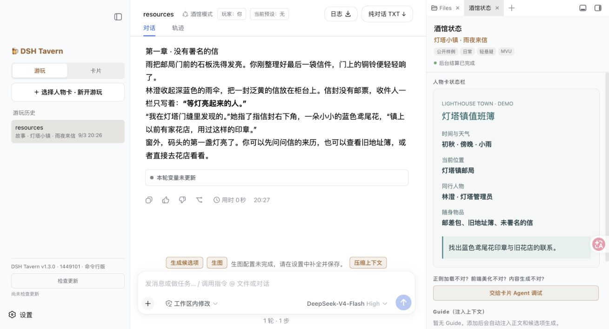
游玩界面 · 左侧继续游戏，中间阅读正文和输入行动，右侧查看状态。这里展示的是人物卡预写开场与初始变量，不是模型生成的测试结果。原创公开样例 · 灯塔小镇（CC0） · 2026-09-03 · 点击图片放大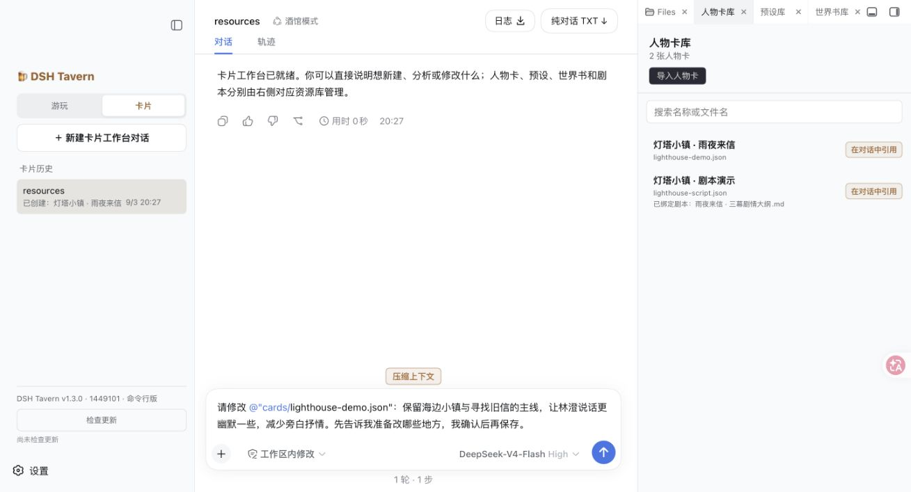
卡片工作台 · 把要保留的设定、想调整的内容说清楚，再与 Agent 讨论。输入框中的修改要求是演示草稿，尚未发送，也未修改人物卡。原创公开样例 · 灯塔小镇（CC0） · 2026-09-03 · 点击图片放大实际应用截图 · DSH 0.1.2-rc.1 / DSH Tavern 1.3.0。样例说明 ↗ · 下载样例人物卡 · 世界书 · 预设 · 剧本大纲
一次游玩是怎样的
- 选一张喜欢的人物卡，预览并确认开场。
- 阅读故事，输入自己的行动或对白；没想好时可以看看候选建议。
- 发送行动，等待新的剧情与状态结果。
- 继续下一轮；不满意时可以重写、回退，或添加持续剧情指导。
例如，你可以直接写“我先不回答，走到窗边看看街上的情况”，不必按固定选项行动。
可以带来什么内容
支持导入酒馆人物卡、世界书和预设，也可以导入小说、剧本或大纲。正则、MVU 和前端美化的具体支持范围，见酒馆生态兼容。
想改变内容时，进入卡片模式，告诉 Agent 哪些不喜欢、希望怎样调整，以及哪些需要保留。它也可以从素材中抽取人物与设定来制作新卡。
开始前需要准备什么
- 一台可运行 DSH 的设备，按安装与启动选择桌面版或命令行版。
- 一个可用的文字模型服务，准备服务地址、模型名称和所需的 API 密钥；模型调用可能产生费用。
- 一张想玩的 PNG / JSON 人物卡；也可以安装后再通过卡片模式制作。
不用先导入外部预设。用户画像、文生图和其他高级设置都可以先跳过，遇到需要时再查。
下一步
还没安装：先看安装与启动。已经装好：从完成第一次游玩开始，再按需要查阅四部分功能文档。
安装与启动
先安装 DSH Tavern，再配置一个可用的文字模型。桌面版和命令行版选择一种即可。
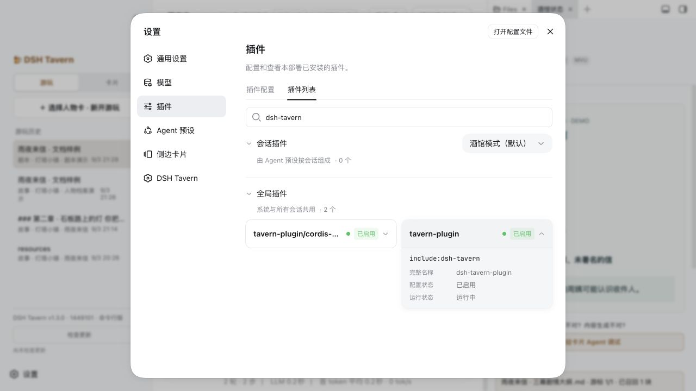
安装后的插件运行状态 · 安装并启动后，可在设置 → 插件 → 插件列表中搜索 dsh-tavern，检查全局插件是否“已启用／运行中”。这不是安装向导；各平台安装命令见正文。原创公开样例 · 灯塔小镇（CC0） · 2026-09-03 · 点击图片放大实际应用截图 · DSH 0.1.2-rc.1 / DSH Tavern 1.3.0。样例说明 ↗ · 下载样例人物卡
选择安装方式
| 方式 | 适合谁 | 支持平台 |
|---|
| DSH Desktop 桌面版 | 希望由桌面程序管理运行环境、启停和端口 | Windows x64、macOS |
| 命令行版 | 希望通过浏览器访问、自己管理服务 | Windows、macOS、Linux / WSL2 |
| Android 实验版 | 愿意自行排错的手机用户 | 通过 DSHA 尝试安装，不保证一定可用 |
桌面版与命令行版选择一种即可，不要同时运行。下方命令会下载并执行本项目安装脚本，请在确认项目来源可信后运行；网页本身不会自动执行安装。
本版适配 DSH 0.1.2-rc.1。安装器不会强制替换已安装的其他 DSH 版本；版本不一致时请留意兼容性提示。
方式一：桌面版
- 先安装 DSH Desktop 2.0.2 或更高版本。
- 启动后，从系统托盘或 macOS 菜单栏打开 Open DSH Terminal。
- 在这个终端里，运行你所用平台的命令。
Windows
powershell
$env:DSH_TAVERN_HOST='desktop'; $tavernInstaller=[Text.Encoding]::UTF8.GetString((New-Object Net.WebClient).DownloadData('https://cdn.jsdelivr.net/gh/flizzywine/dsh-tavern@main/install.ps1')); Invoke-Expression $tavernInstaller
macOS
bash
curl -fsSL https://cdn.jsdelivr.net/gh/flizzywine/dsh-tavern@main/install.sh | DSH_TAVERN_HOST=desktop sh
安装完成后，重启 DSH Desktop，从托盘的 Profile 菜单选择 tavern。看到酒馆界面后，继续下方的“配置模型并开始第一局”。桌面版由 DSH Desktop 管理启停，不需要另外启动命令行服务。
方式二：命令行版
先准备 Node.js 22.19 或更高版本。建议安装 Git，便于增量更新；没有 Git 时安装器会回退到 ZIP 下载。未安装 DSH 时，安装器会安装本版适配版本；已有 DSH 则保留原版本。
Windows PowerShell
powershell
$env:DSH_TAVERN_HOST='cli'; $tavernInstaller=[Text.Encoding]::UTF8.GetString((New-Object Net.WebClient).DownloadData('https://cdn.jsdelivr.net/gh/flizzywine/dsh-tavern@main/install.ps1')); Invoke-Expression $tavernInstaller
macOS / Linux / WSL2 终端
bash
curl -fsSL https://cdn.jsdelivr.net/gh/flizzywine/dsh-tavern@main/install.sh | DSH_TAVERN_HOST=cli sh
安装器会安装依赖、启动酒馆，并在首次安装时打开网页。如果关闭了页面，可以重新打开：
也可以运行以下命令查看服务状态与访问地址：
请使用显示的完整访问地址；它可能包含鉴权 token，不要分享给别人。这里只打开浏览器页面，不是重新安装。
配置模型并开始第一局
- 在左侧栏底部打开 设置 → 模型。
- 按服务要求填写 API 密钥、服务地址并选择文字模型。
- 导入 PNG / JSON 人物卡，选择新建游玩。
- 预览开场、按需设置玩家称呼，然后发送第一条行动。
能够看到新生成的正文，就完成了首次游玩。不需要同时配置外部预设、用户画像或文生图。详细步骤见配置文字模型和第一次游玩。
关机后如何重新打开
桌面版：重新启动 DSH Desktop，确认当前 Profile 是 tavern。
命令行版：先启动服务，再打开页面。
bash
dsh-tavern start
dsh-tavern open
需要停止或重启时，分别使用以下命令：
bash
dsh-tavern stop
dsh-tavern restart
关闭浏览器页面不等于停止服务；电脑关机则会结束本机服务。这里说的是游戏服务，和本地文档预览地址 127.0.0.1:4173 不同。
更新与重新安装
首次安装、更新或重新安装，都可以运行上面对应宿主、对应平台的安装命令。一般无需先卸载；安装器更新程序文件，保留人物卡、对话、配置、自定义工具和 Skill。
重新安装前仍建议备份数据。如果使用自定义安装或数据目录，请保持原配置。
命令行版也可使用：
这个命令更新 Tavern，不是升级 DSH 本体。桌面版在 DSH Terminal 中重新运行桌面安装命令，完成后重启 Desktop。若内置更新失败，也可用对应安装命令更新安装器和程序。
Android：通过 DSHA 安装
Android 属于实验性支持，不保证一定可用。 不同手机系统、DSHA 版本、网络和后台限制都可能导致安装或运行失败。
- 安装 DSHA，配置模型并成功启动一次。
- 在 DSHA 的命令执行入口直接运行下面这一条命令。安装脚本是主流程，会自行完成下载、配置、校验、启动和失败回滚。
bash
node -e "fetch('https://cdn.jsdelivr.net/gh/flizzywine/dsh-tavern@69d74f5/android/setup.sh').then(async r=>{if(!r.ok)throw Error('HTTP '+r.status);require('fs').writeFileSync('/tmp/dsh-tavern-setup.sh',await r.text())}).then(()=>{const r=require('child_process').spawnSync('bash',['/tmp/dsh-tavern-setup.sh'],{stdio:'inherit'});process.exit(r.status??1)}).catch(e=>{console.error(e);process.exit(1)})"
- 如果当前 DSHA 版本找不到命令执行入口，才打开“创造模式”，把下面这句话连同命令发给 Agent；Agent 只负责启动脚本，不需要分析或逐步安装：
text
只执行下面这一条命令，等待它结束，然后原样返回最后 30 行输出，不要拆解或改写安装步骤：
node -e "fetch('https://cdn.jsdelivr.net/gh/flizzywine/dsh-tavern@69d74f5/android/setup.sh').then(async r=>{if(!r.ok)throw Error('HTTP '+r.status);require('fs').writeFileSync('/tmp/dsh-tavern-setup.sh',await r.text())}).then(()=>{const r=require('child_process').spawnSync('bash',['/tmp/dsh-tavern-setup.sh'],{stdio:'inherit'});process.exit(r.status??1)}).catch(e=>{console.error(e);process.exit(1)})"
- 安装完成后重启 DSHA，在侧栏打开“酒馆工作台”。
从手机 Download 目录导入人物卡前，请在 Android 系统设置中允许 DSHA“访问所有文件”。未授权时酒馆会给出提示，也可尝试系统文件选择器。
以后可使用“更新到最新版”；打不开时尝试 DSHA 酒馆工作台入口中的“更新/修复”。使用时请允许 DSHA 后台运行，避免系统省电策略中断服务。
安装失败时
- 先保留最前面的具体错误与文件路径，不要只截取最后一句“失败”。
- 无法打开网页：检查服务是否运行，并使用含鉴权信息的完整地址。
- 能打开但不能生成：先检查模型服务配置和服务返回的错误。
- 一键命令仍无法使用：查看手动安装说明。
更多说明见常见问题与排错日志。不要公开模型密钥、鉴权链接或私人剧情。
酒馆生态兼容
已有的人物卡、世界书和预设，可以从这里继续使用。先了解支持范围，再按需要查看具体操作。
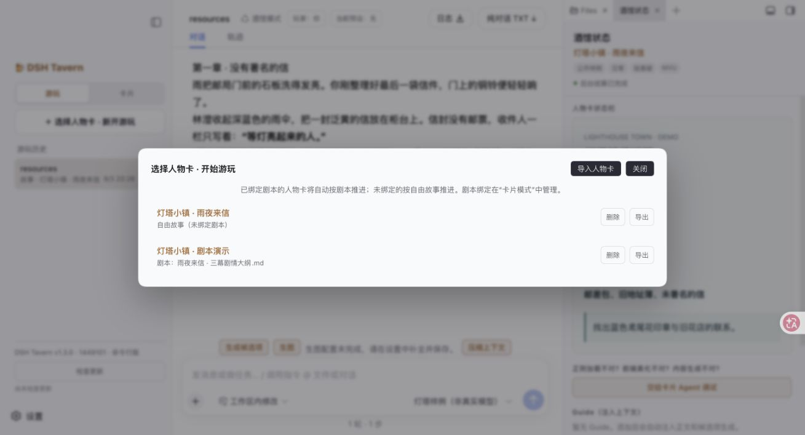
选择人物卡 · 选卡器列出公开样例人物卡，以及导入、导出和资源关联信息；同一张卡可以创建不同游戏。原创公开样例 · 灯塔小镇（CC0） · 2026-09-03 · 点击图片放大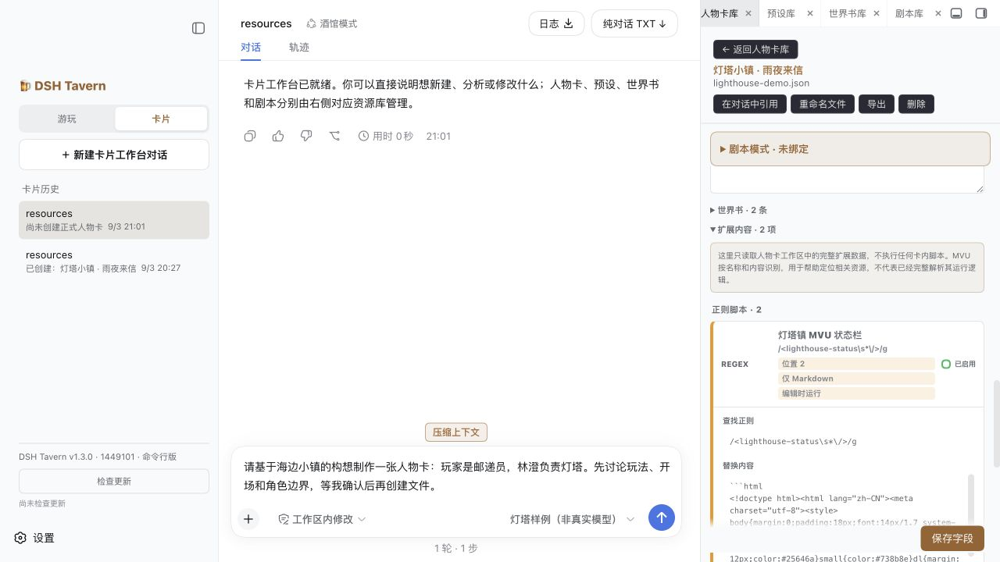
查看正则与扩展资源 · 展开正则可以阅读查找表达式和替换内容；这里是只读检查，不是通用脚本编辑器。原创公开样例 · 灯塔小镇（CC0） · 2026-09-03 · 点击图片放大实际应用截图 · DSH 0.1.2-rc.1 / DSH Tavern 1.3.0。样例说明 ↗ · 下载样例人物卡
可以带来哪些资源
| 资源或能力 | 可以做什么 | 继续阅读 |
|---|
| 人物卡 | 导入 PNG / JSON，查看、编辑，导出 JSON | 导入人物卡 |
| 世界书 | 导入背景设定，编辑条目并关联人物卡 | 认识世界书库 |
| 预设 | 导入写作规则，选择并编辑提示词和正则 | 使用外部预设 |
| 正则与前端美化 | 处理正文格式，展示 HTML 内容和人物卡面板 | 正则与 HTML |
| MVU | 后台更新变量，在右侧持续展示状态栏 | MVU 状态栏 |
支持范围怎么理解
能导入一张卡，不等于它依赖的全部第三方脚本都能执行。我们分别说明资源的导入、编辑、展示和运行支持，不用“全面兼容”代替具体条件。
- 人物卡支持 PNG 导入和 JSON 导出，目前不提供 PNG 导出。
- 世界书保留部分高级字段，不等于完整复现原酒馆的全部触发规则。
- 正则、MVU 和前端美化取决于人物卡的结构，以及所依赖的脚本和宿主接口。
- 预设用于游玩正文，效果可能与原酒馆不同；不使用外部预设也可以开始。
从哪里开始
有喜欢的人物卡，可以直接进入游玩模式。如果想修改其中不喜欢的内容，再进入卡片模式。
如果正文中的状态栏经常掉格式，可以按需转换为 MVU 版。正常工作的卡不需要转换。
逐项查阅
资源与展示支持
兼容范围参考
游玩模式
从第一局开始，认识眼前的界面和操作。无需先学会所有设置，也不用先制作自己的卡。
游玩界面 · 左侧继续游戏，中间阅读正文和输入行动，右侧查看状态。这里展示的是人物卡预写开场与初始变量，不是模型生成的测试结果。原创公开样例 · 灯塔小镇（CC0） · 2026-09-03 · 点击图片放大实际应用截图 · DSH 0.1.2-rc.1 / DSH Tavern 1.3.0。样例说明 ↗ · 下载样例人物卡
开始第一局
- 完成安装，在 DSH 中配置文字模型服务。
- 导入一张 PNG 或 JSON 人物卡，选择新建游玩。
- 预览开场白，按需要选择开场并设置玩家称呼。
- 输入自己的行动，或选择一个候选、修改后发送。
没有外部预设也能开始；用户画像、生图和后台独立模型都可以先不管。
认识游玩界面
| 界面区域 | 在这里做什么 |
|---|
| 左侧历史 | 找到并继续已有游戏，管理对话 |
| 中间正文 | 阅读故事，查看当前回复和正文操作 |
| 输入框与候选 | 输入行动和对白，选择、修改或重新生成候选 |
| 右侧酒馆状态 | 查看 Guide、人物状态，以及已绑定剧本的进度 |
玩过几轮之后
跟随一份剧本游玩
导入小说、大纲或剧本，绑定人物卡后新开一局。故事会参考当前进度附近的片段，你仍然可以自由行动、偏离主线。
右侧可以查看进度和参考片段。进度展示不是跳章按钮。
保存和继续故事
通过左侧历史对话继续游玩，也可以导出纯对话 TXT，保存玩家与角色的正文。日志导出用于排错，与故事导出不同。
逐项查阅
开始第一局
输入、候选与正文
右侧面板与更新结果
跟随剧本游玩
历史对话与导出
卡片模式
把不合口味的内容改成自己喜欢的样子。人物卡、世界书、预设和剧本，都可以通过对话来制作与修改。
卡片工作台 · 把要保留的设定、想调整的内容说清楚，再与 Agent 讨论。输入框中的修改要求是演示草稿，尚未发送，也未修改人物卡。原创公开样例 · 灯塔小镇（CC0） · 2026-09-03 · 点击图片放大实际应用截图 · DSH 0.1.2-rc.1 / DSH Tavern 1.3.0。样例说明 ↗ · 下载样例人物卡
认识卡片工作台
卡片模式不是游戏正文窗口，而是与 Agent 一起处理资源的工作台。选择要做的任务，在中间讨论修改，在右侧查看和引用资源。
| 界面区域 | 用途 |
|---|
| 起始任务 | 修改人物卡、世界书、预设或剧本；从素材制卡；空白开始 |
| 中间对话 | 说明要求、讨论方案，确认后让 Agent 写入修改 |
| 右侧四个资源库 | 查看人物卡、世界书、剧本与预设，编辑或引用相关内容 |
| 工作台历史 | 继续之前的制作与修改，与游玩历史分开管理 |
通过对话修改不喜欢的内容
- 选择修改任务和目标资源。
- 告诉 Agent 哪些内容不喜欢，希望怎样调整，以及哪些设定要保留。
- 查看建议，确认修改范围后再写入工作版。
- 查看修改结果；人物卡可新开一局体验。
例如：“保留人物的身份和背景，但把过于强势的性格改得更克制。先告诉我你准备改哪些地方。”
这套方式同样适用于世界书、预设和剧本，不只是人物卡。
从小说和剧本中提取新卡
选择一份或多份素材，说明想提取的人物、相关设定和保留范围。与 Agent 讨论、确认后制作新人物卡，不需要从零填写所有字段。
四个资源库
- 人物卡库：导入、编辑字段、导出 JSON，管理世界书与剧本绑定。
- 世界书库：统一查看独立世界书和卡内世界书，编辑条目与关联。
- 剧本库：导入、查看、引用和绑定素材；正文修改通过 Agent 完成。
- 预设库：选择游玩文风与写作规则，编辑提示词、正则和条目开关。
引用、绑定和修改有什么区别
引用是把资源交给当前工作台讨论；绑定是让资源与人物卡建立使用关系；修改则会改变对应工作版。引用到对话，不等于已经绑定到游戏。
导入时保留人物卡原版，日常修改工作版。需要恢复时，可请 Agent 恢复人物卡原版；这不是所有资源都具备的任意版本恢复功能。
逐项查阅
认识工作台
人物卡库
世界书库
剧本与素材库
预设库
高级功能
这些能力不是开局前的必修课。遇到需要解决的问题，再点开相应的说明。
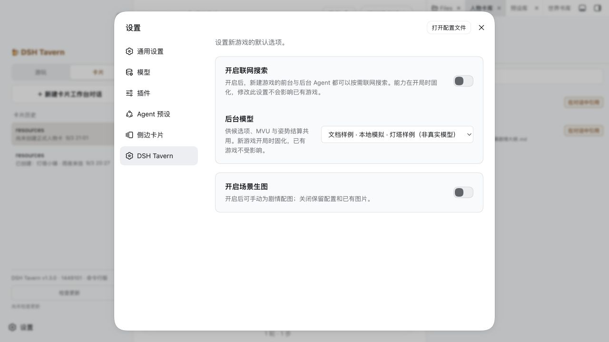
按需开启的设置 · 联网搜索、后台模型和场景生图分别配置。后台模型与联网权限在新局创建时固定。原创公开样例 · 灯塔小镇（CC0） · 2026-09-03 · 点击图片放大实际应用截图 · DSH 0.1.2-rc.1 / DSH Tavern 1.3.0。样例说明 ↗ · 下载样例人物卡
文字游玩背后的能力
- 历史回忆：故事变长后，按需找回已经发生的细节。
- 上下文压缩：整理长对话，不等于无限或无损记忆。
- 世界书召回：补充预先写好的背景，与回忆游戏历史不同。
- 后台人物设计：为本局重要人物设计、补全和复用档案，普通卡与 MVU 卡都可使用。
按需要定制
- 状态栏转 MVU：正文状态栏反复掉格式时再考虑转换。
- 用户画像：通过访谈整理长期偏好，只在右侧栏主动开启新局默认使用。
- 互联网搜索：允许新局中的前后台按需查外部资料，默认关闭。
- 模型分工：正文与后台任务可以选用不同模型。
- 系统提示词：调整内置生成规则，与外部预设分开管理。
创作方法与扩展
为文字剧情配图
文生图独立于文字游玩，默认关闭。配置渠道并主动开启后，可手动出图、重画、查看版本，以及在支持的渠道中设置人物参考。
生图可能产生额外费用。无需逐个了解所有渠道，选择自己实际使用的服务即可。
逐项查阅
历史回忆与长局
状态栏掉格式时转 MVU
用户画像
后台人物设计
互联网搜索
前后台模型分工
系统提示词
文风提炼与 Skill
工具与插件
文生图
生图渠道参考
帮助与维护
安装、数据和排错的辅助说明。遇到问题时查阅，不需要按顺序阅读。
遇到问题时
先查看并复制具体错误，再选择对应的处理方法。清除提示不等于修复问题；连接成功也不等于真实生成一定成功。
安装、更新与数据
首次安装、检查更新、启动与停止、备份与重新安装分别说明。更新保留数据，不代表删除内容可自动恢复，也不是云同步。
逐项查阅
排错与维护
酒馆生态兼容总览
把人物卡、世界书、预设、正则、MVU 与前端美化放在一起理解，才能判断一份酒馆资源能使用到什么程度。
选择人物卡 · 选卡器列出公开样例人物卡，以及导入、导出和资源关联信息；同一张卡可以创建不同游戏。原创公开样例 · 灯塔小镇（CC0） · 2026-09-03 · 点击图片放大查看正则与扩展资源 · 展开正则可以阅读查找表达式和替换内容；这里是只读检查，不是通用脚本编辑器。原创公开样例 · 灯塔小镇（CC0） · 2026-09-03 · 点击图片放大实际应用截图 · DSH 0.1.2-rc.1 / DSH Tavern 1.3.0。样例说明 ↗ · 下载样例人物卡
在哪里
指南：资源导入与运行支持
如何使用
- 人物卡支持 PNG / JSON 导入、查看和编辑，导出为 JSON。
- 世界书和预设可导入、编辑与使用，各有自己的生效范围。
- 正则、HTML 和 MVU 提供展示与状态能力；具体脚本仍需匹配已支持接口。
结果与生效范围
已有资源可以复用，也可以通过卡片模式调整。
注意事项
这是酒馆生态兼容，不是已停用的“兼容模式”。不保证所有第三方插件或原版运行语义可用。
相关说明
正则美化与 HTML 面板
人物卡中的受支持正则可以处理内容，并将 HTML 展示为正文面板。
游玩界面 · 左侧继续游戏，中间阅读正文和输入行动，右侧查看状态。这里展示的是人物卡预写开场与初始变量，不是模型生成的测试结果。原创公开样例 · 灯塔小镇（CC0） · 2026-09-03 · 点击图片放大查看正则与扩展资源 · 展开正则可以阅读查找表达式和替换内容；这里是只读检查，不是通用脚本编辑器。原创公开样例 · 灯塔小镇（CC0） · 2026-09-03 · 点击图片放大实际应用截图 · DSH 0.1.2-rc.1 / DSH Tavern 1.3.0。样例说明 ↗ · 下载样例人物卡
在哪里
自动：人物卡消息展示
怎样参与游玩
- 导入带有正则或前端美化资源的人物卡。
- 游玩时查看正文的实际展示结果。
- 需要检查规则时，在人物卡扩展中查看；需要修改时交给 Agent。
结果与生效范围
同一段文本可以按卡片规则转换为更适合阅读的展示。
注意事项
HTML 展示不等于所有浏览器脚本或酒馆宿主接口都可运行；应按具体卡片依赖判断。
相关说明
查看正则、脚本和扩展数据
人物卡扩展页可以查看正则、Tavern Helper 脚本与其他扩展数据。
查看正则与扩展资源 · 展开正则可以阅读查找表达式和替换内容；这里是只读检查，不是通用脚本编辑器。原创公开样例 · 灯塔小镇（CC0） · 2026-09-03 · 点击图片放大实际应用截图 · DSH 0.1.2-rc.1 / DSH Tavern 1.3.0。样例说明 ↗ · 下载样例人物卡
在哪里
界面：人物卡扩展
如何使用
- 打开人物卡的扩展内容。
- 阅读具体规则、脚本和关联数据。
- 需要修改时，将人物卡引用给 Agent 并明确要求。
结果与生效范围
可以了解卡片的展示与运行依赖。
注意事项
这里主要是只读查看，不是通用可视化脚本编辑器；看到扩展数据不代表它能全部运行。
相关说明
Tavern Helper 与卡内脚本支持范围
卡内脚本能否工作，取决于它使用的接口，而不只取决于能否导入。
查看正则与扩展资源 · 展开正则可以阅读查找表达式和替换内容；这里是只读检查，不是通用脚本编辑器。原创公开样例 · 灯塔小镇（CC0） · 2026-09-03 · 点击图片放大实际应用截图 · DSH 0.1.2-rc.1 / DSH Tavern 1.3.0。样例说明 ↗ · 下载样例人物卡
在哪里
自动 / 指南
怎样参与游玩
- 查看人物卡中的 Tavern Helper 脚本与扩展。
- 了解脚本所需的变量、界面联动和宿主接口。
- 出现问题时连同实际错误交给 Agent 检查。
结果与生效范围
可以针对具体依赖确认支持范围，而不是只凭导入成功判断。
注意事项
不承诺所有手机、数据库或酒馆插件可用。已有聊天记录遵循 DSH 的历史模型，不等同于原酒馆可任意改写的消息列表。
相关说明
高级字段与导入保留规则
导入时保留高级字段，是为了保存资源信息，不表示每个字段都完整执行。
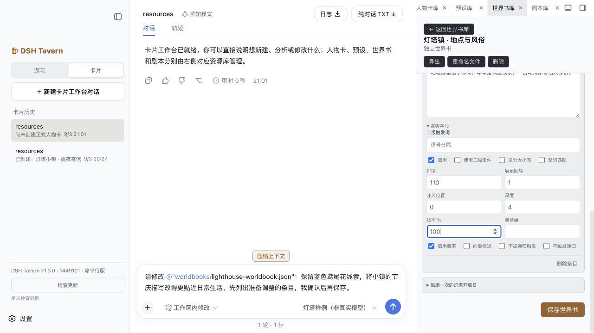
世界书高级兼容字段 · 排序、位置、深度、概率与递归等字段可以保留；能保存字段不代表所有原版运行语义均已实现。原创公开样例 · 灯塔小镇（CC0） · 2026-09-03 · 点击图片放大实际应用截图 · DSH 0.1.2-rc.1 / DSH Tavern 1.3.0。样例说明 ↗ · 下载样例人物卡
在哪里
界面：兼容字段 / 指南
如何使用
- 在兼容字段中查看排序、位置、深度、概率、递归等配置。
- 需要修改时先区分保存字段与实际召回效果。
- 遇到差异时，结合实际条目与游戏结果检查。
结果与生效范围
未知字段和 extensions 等数据可被保留。
注意事项
不能据此承诺原酒馆的全部运行语义；这里也不是重新开启兼容模式的入口。
相关说明
配置第一个文字模型
文字模型负责生成故事。开始第一局前，需要有可用的模型服务。
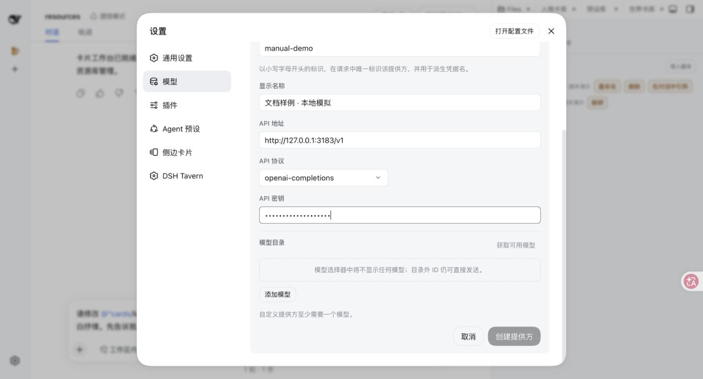
配置文字模型 · 本地演示模型的服务地址、模型名称和设置入口。密钥为无效测试占位值，不含真实凭据。原创公开样例 · 灯塔小镇（CC0） · 2026-09-03 · 点击图片放大实际应用截图 · DSH 0.1.2-rc.1 / DSH Tavern 1.3.0。样例说明 ↗ · 下载样例人物卡
在哪里
DSH：设置 → 模型
如何使用
- 打开左侧设置 → 模型。
- 按使用的服务填写地址、API 密钥并选择模型。
- 保存后返回酒馆，使用已配置的模型开始游玩。
结果与生效范围
发送行动后，模型返回新的故事正文。
注意事项
模型可能产生服务费用。不要分享密钥或带鉴权信息的访问地址。这里不需要同时配置外部预设、生图或后台独立模型。
相关说明
导入与导出人物卡
人物卡支持 PNG / JSON 导入，导出为 JSON。
选择人物卡 · 选卡器列出公开样例人物卡，以及导入、导出和资源关联信息；同一张卡可以创建不同游戏。原创公开样例 · 灯塔小镇（CC0） · 2026-09-03 · 点击图片放大人物卡文件管理 · 人物卡详情顶部提供重命名文件、导出和删除；下方查看剧本、世界书与扩展。删除前需确认影响。原创公开样例 · 灯塔小镇（CC0） · 2026-09-03 · 点击图片放大实际应用截图 · DSH 0.1.2-rc.1 / DSH Tavern 1.3.0。样例说明 ↗ · 下载样例人物卡
在哪里
界面：人物卡库 / 选卡器
如何使用
- 打开人物卡库或选卡器，选择导入。
- 选择 PNG 或 JSON 人物卡文件，导入后查看内容。
- 需要保存或分享卡时，使用 JSON 导出。
结果与生效范围
导入的卡可以编辑、用于新开局，或引用到卡片工作台。
注意事项
PNG 导入能力不等于 PNG 导出能力；导入成功也不代表卡内所有脚本可执行。
相关说明
完成第一次游玩
第一次游玩只需要一张人物卡和一个可用的文字模型。
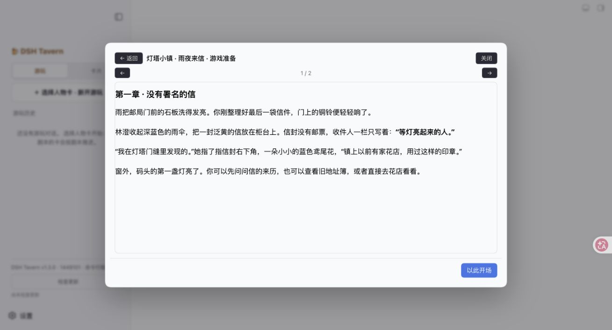
选择开场 · 选择人物卡后，先预览开场。用左右箭头切换，再点击“以此开场”。原创公开样例 · 灯塔小镇（CC0） · 2026-09-03 · 点击图片放大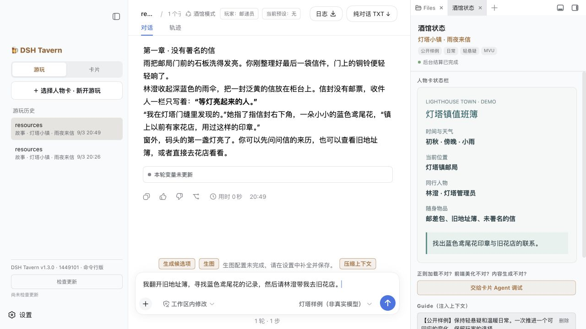
输入行动与对白 · 在正文下方输入本轮想做的事，选择文字模型后发送；不必先生成候选项。原创公开样例 · 灯塔小镇（CC0） · 2026-09-03 · 点击图片放大实际应用截图 · DSH 0.1.2-rc.1 / DSH Tavern 1.3.0。样例说明 ↗ · 下载样例人物卡
在哪里
界面：新建游玩
如何使用
- 导入 PNG / JSON 人物卡，选择新建游玩。
- 预览开场白；有多个开场时前后切换选择。
- 按需要填写故事中的玩家称呼，确认开场。
- 阅读正文后直接输入行动，或把候选填入输入框、修改后发送。
结果与生效范围
你会得到新的故事正文，并可继续下一轮。
注意事项
用户画像不在开场准备中。生图、外部预设、系统提示词和其他高级功能都可以先跳过。
相关说明
认识界面
先按当前任务认识界面，不必一次记住所有面板。
游玩界面 · 左侧继续游戏，中间阅读正文和输入行动，右侧查看状态。这里展示的是人物卡预写开场与初始变量，不是模型生成的测试结果。原创公开样例 · 灯塔小镇（CC0） · 2026-09-03 · 点击图片放大实际应用截图 · DSH 0.1.2-rc.1 / DSH Tavern 1.3.0。样例说明 ↗ · 下载样例人物卡
在哪里
指南
如何使用
- 左侧：找到游玩历史或卡片工作台历史，继续已有对话。
- 中间：游玩时阅读正文和输入行动；卡片模式中与 Agent 讨论资源。
- 右侧：游玩时查看酒馆状态；卡片模式中查看并操作资源库。
结果与生效范围
围绕“找对话 → 阅读或讨论 → 查看状态或资源”使用界面即可。
注意事项
人物卡自身会影响正文美化和状态栏外观；不是每张卡都有相同的数值面板。
相关说明
哪些设置可以先不管
先把故事玩起来。高级设置是可选能力，不是新手清单。
按需开启的设置 · 联网搜索、后台模型和场景生图分别配置。后台模型与联网权限在新局创建时固定。原创公开样例 · 灯塔小镇（CC0） · 2026-09-03 · 点击图片放大实际应用截图 · DSH 0.1.2-rc.1 / DSH Tavern 1.3.0。样例说明 ↗ · 下载样例人物卡
在哪里
指南
如何使用
- 完成文字模型配置，导入卡并开局。
- 先用自由输入、候选、重写和 Guide 调整眼前的故事。
- 遇到跨局偏好、状态栏格式或配图需求时，再查相应高级功能。
结果与生效范围
不使用外部预设、画像或生图，也可以正常进行文字游玩。
注意事项
后台人物设计是按条件运行的能力，不需要你在开局前逐个人物配置。
相关说明
选择人物卡与独立开局
同一张人物卡可以开启多局独立游戏，分别保存故事。
选择人物卡 · 选卡器列出公开样例人物卡，以及导入、导出和资源关联信息；同一张卡可以创建不同游戏。原创公开样例 · 灯塔小镇（CC0） · 2026-09-03 · 点击图片放大实际应用截图 · DSH 0.1.2-rc.1 / DSH Tavern 1.3.0。样例说明 ↗ · 下载样例人物卡
在哪里
界面：新建游玩
如何使用
- 选择新建游玩，找到要使用的人物卡。
- 查看开场并确认，以这张卡开始一局。
- 想体验另一条故事时，用同一张卡再新开一局。
结果与生效范围
不同游戏在历史中分别管理，不会合成同一段剧情。
注意事项
人物卡是否绑定剧本，会影响新局的推进方式。修改卡或绑定关系后，应通过新局体验对应内容。
相关说明
预览与选择开场白
人物卡可以提供默认开场和备选开场，你可以先看再选。
选择开场 · 选择人物卡后，先预览开场。用左右箭头切换，再点击“以此开场”。原创公开样例 · 灯塔小镇（CC0） · 2026-09-03 · 点击图片放大实际应用截图 · DSH 0.1.2-rc.1 / DSH Tavern 1.3.0。样例说明 ↗ · 下载样例人物卡
在哪里
界面：开局选择器
如何使用
- 进入人物卡开场预览。
- 如果有多个开场，用前后切换查看内容。
- 确定希望进入的情境，选择“以此开场”。
结果与生效范围
游戏从选中的开场开始。
注意事项
这不是游玩后切换历史正文版本的工具；开场选择与当前正文重写是不同操作。
相关说明
设置与修改玩家称呼
玩家称呼是故事中如何称呼你，不是长期偏好画像。
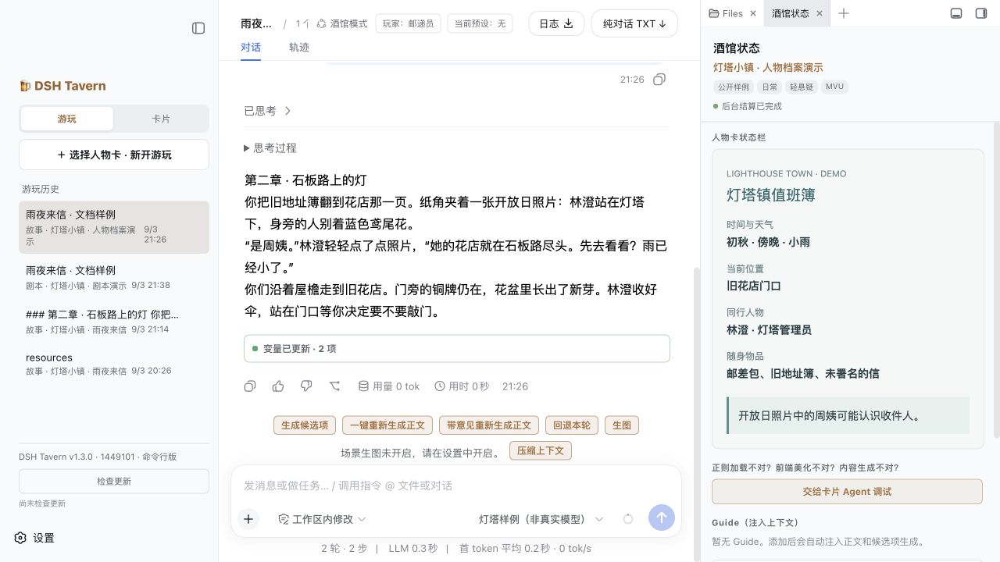
本局玩家称呼 · 顶部“玩家：邮递员”显示本局称呼，点击可修改后续内容中的称呼。图中未修改既有剧情，也不是长期画像设置。原创公开样例 · 灯塔小镇（CC0） · 2026-09-03 · 点击图片放大实际应用截图 · DSH 0.1.2-rc.1 / DSH Tavern 1.3.0。样例说明 ↗ · 下载样例人物卡
在哪里
界面：开局 / 玩家称呼操作
如何使用
- 开场准备中填写姓名、昵称或身份；不填时使用默认称呼。
- 确认开场预览中的称呼。
- 游玩中需要调整时，使用玩家称呼操作修改。
结果与生效范围
当前游戏使用你设置的玩家称呼。
注意事项
修改称呼不等于重写历史剧情，也不会编辑长期用户画像。
相关说明
自由输入行动与对白
可以直接输入行为、对白或剧情要求，不依赖系统候选。
输入行动与对白 · 在正文下方输入本轮想做的事，选择文字模型后发送；不必先生成候选项。原创公开样例 · 灯塔小镇（CC0） · 2026-09-03 · 点击图片放大实际应用截图 · DSH 0.1.2-rc.1 / DSH Tavern 1.3.0。样例说明 ↗ · 下载样例人物卡
在哪里
界面：输入框
如何使用
- 在输入框写下下一步行动或角色对白。
- 确认文字后发送。
- 阅读生成的正文，再继续输入下一轮。
结果与生效范围
故事根据人物卡、当前剧情和你的输入推进。
注意事项
想让要求持续生效时，使用 Guide；一次性输入与持续指导不是同一件事。
相关说明
生成并选择行动候选
不知道下一步做什么时，可以借助人物行动和场景变化候选。
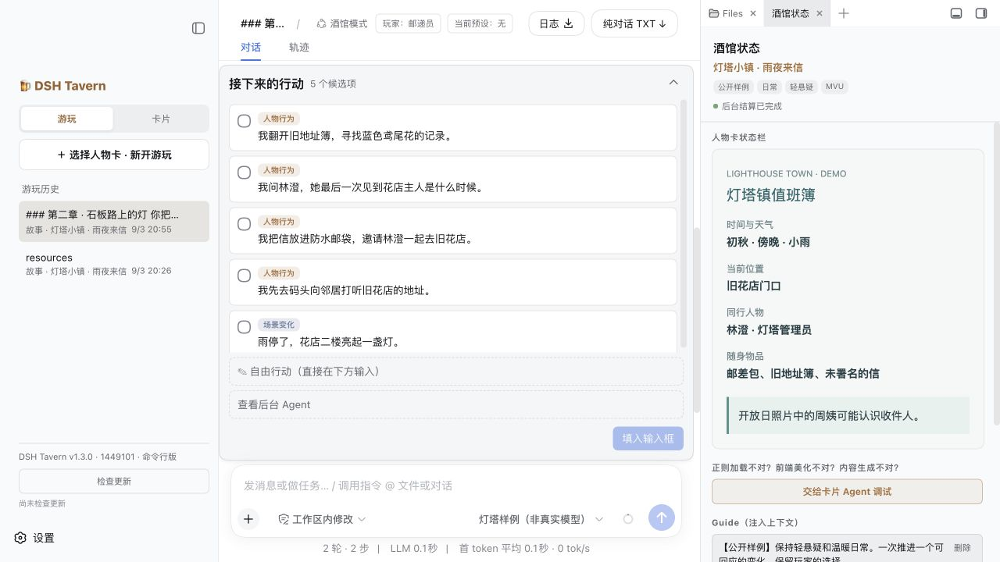
行动候选 · 人物行为与场景变化分别列出，也可以自由输入。由独立本地模拟服务提供预写内容，工具与界面由实际应用执行；不代表真实模型质量。原创公开样例 · 灯塔小镇（CC0） · 2026-09-03 · 点击图片放大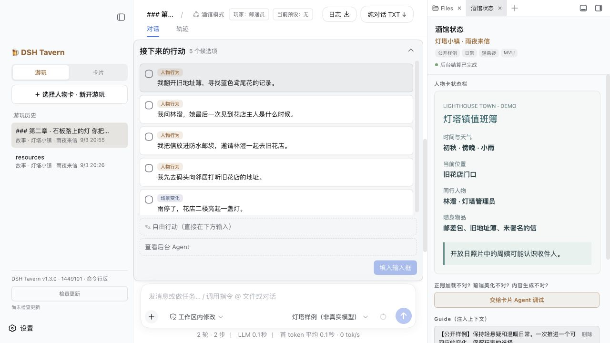
选中候选后填入输入框 · 选中一项后，“填入输入框”可用；选择不等于直接执行，填入后仍可修改。原创公开样例 · 灯塔小镇（CC0） · 2026-09-03 · 点击图片放大实际应用截图 · DSH 0.1.2-rc.1 / DSH Tavern 1.3.0。样例说明 ↗ · 下载样例人物卡
在哪里
界面：生成候选项
如何使用
- 生成候选项，查看建议。
- 选择喜欢的候选，点击“填入输入框”。
- 按自己的想法修改输入框里的文字，再发送。
结果与生效范围
候选先成为可编辑的输入，不会替你直接执行行动。
注意事项
候选与正文分开生成；不满意候选时无需重写正文。剧本游玩的候选更贴近主线。
相关说明
按要求重新生成候选
重新生成候选只更换行动建议，不改写已经满意的故事正文。
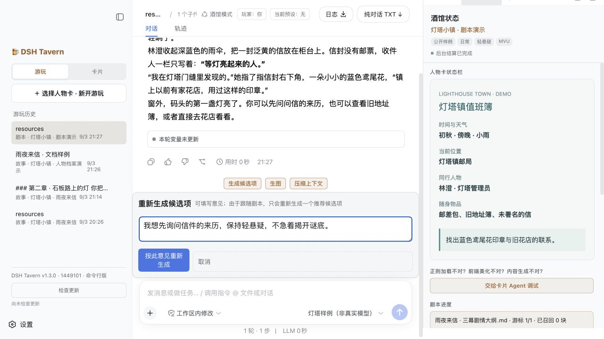
按意见重生成候选 · 这里修改候选建议，不是重写已经生成的正文。原创公开样例 · 灯塔小镇（CC0） · 2026-09-03 · 点击图片放大实际应用截图 · DSH 0.1.2-rc.1 / DSH Tavern 1.3.0。样例说明 ↗ · 下载样例人物卡
在哪里
界面：候选操作
如何使用
- 在候选操作中选择重新生成。
- 需要明确方向时，附上希望调整的意见。
- 等待生成完成，选择候选填入输入框，修改后再发送。
结果与生效范围
得到新的一组候选建议。
注意事项
候选生成也会调用模型；失败时查看当前提示，不要把候选失败误认为正文丢失。
相关说明
重新生成当前正文
不满意当前回复时，可以直接重写，也可以先告诉模型哪里需要改变。
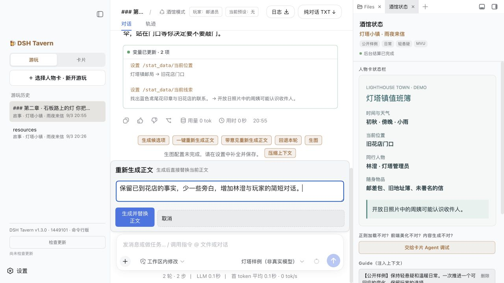
带意见重写正文 · 填写想保留与想调整的内容后，可重新生成当前正文；图中的重写意见尚未提交。原创公开样例 · 灯塔小镇（CC0） · 2026-09-03 · 点击图片放大实际应用截图 · DSH 0.1.2-rc.1 / DSH Tavern 1.3.0。样例说明 ↗ · 下载样例人物卡
在哪里
界面：正文操作
如何使用
- 在当前正文操作中选择重新生成。
- 留空直接重写；有具体要求时填写意见，例如“保留事件，但减少旁白解释”。
- 确认并等待生成，阅读新的当前正文。
结果与生效范围
当前回合得到重新生成的正文。
注意事项
操作针对当前回合，不是任意历史节点的分支编辑。新的生成可能产生模型费用。
相关说明
回退当前回合
回退用于撤回当前回合，再尝试另一种行动。
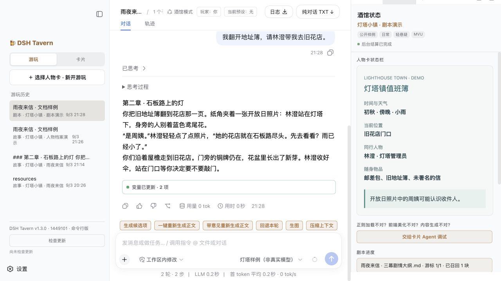
当前回合的操作 · 从“更多”菜单选择“回退本轮”；它针对最近一轮输入与正文，不是任意历史节点。图中仅展示入口，未执行删除。原创公开样例 · 灯塔小镇（CC0） · 2026-09-03 · 点击图片放大实际应用截图 · DSH 0.1.2-rc.1 / DSH Tavern 1.3.0。样例说明 ↗ · 下载样例人物卡
在哪里
界面：回合操作
如何使用
- 打开输入框上方的“更多”菜单，选择“回退本轮”。
- 确认要回退的是眼前这轮内容，再执行。
- 查看回退后的正文与状态，重新输入行动。
结果与生效范围
在回退后的有效剧情基础上继续游玩。
注意事项
以界面当前允许回退的范围为准；不提供任意历史节点的存档树，也不要把回退当作数据备份。
相关说明
持续剧情指导（Guide）
Guide 保存当前游戏持续生效的剧情或写作要求。
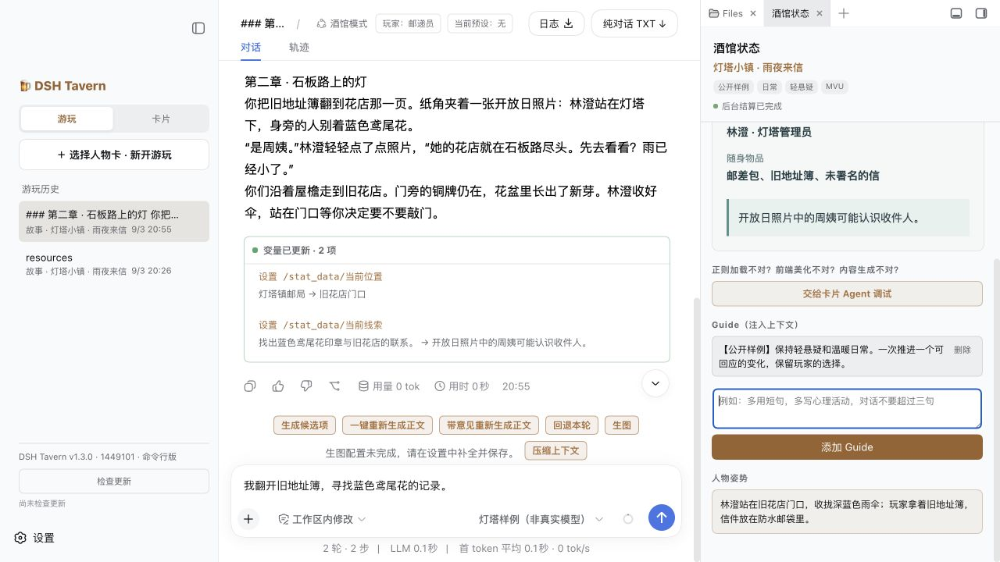
剧情指导与人物姿势 · 右侧 Guide 可持续约束剧情；下方人物姿势是后台结算结果。由独立本地模拟服务提供预写内容，工具与界面由实际应用执行；不代表真实模型质量。原创公开样例 · 灯塔小镇（CC0） · 2026-09-03 · 点击图片放大实际应用截图 · DSH 0.1.2-rc.1 / DSH Tavern 1.3.0。样例说明 ↗ · 下载样例人物卡
在哪里
界面：酒馆状态 → Guide
如何使用
- 打开酒馆状态中的 Guide。
- 添加明确要求，例如“本局放慢感情推进，少用旁白总结”。
- 后续可查看、添加或删除这些指导。
结果与生效范围
正文和候选生成会使用当前有效的 Guide。
注意事项
Guide 针对本局，不是跨局长期画像；修改它不会自动改写已经发生的故事。
相关说明
阅读正文、思考过程与复制消息
正文区用来阅读故事，并在需要时查看模型返回的思考内容。
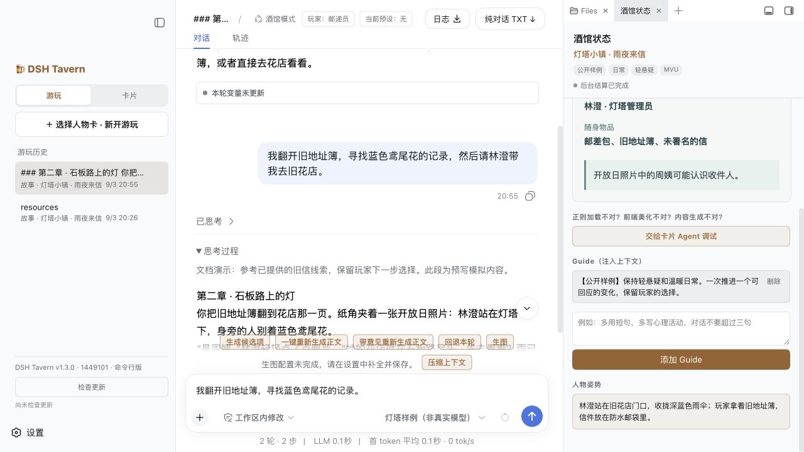
正文与思考过程分开展示 · 点开“思考过程”查看模型实际返回的内容；图中思考文字是明确标注的本地模拟内容。原创公开样例 · 灯塔小镇（CC0） · 2026-09-03 · 点击图片放大实际应用截图 · DSH 0.1.2-rc.1 / DSH Tavern 1.3.0。样例说明 ↗ · 下载样例人物卡
在哪里
界面：消息区域
如何使用
- 阅读当前正文，按人物卡的展示方式查看内容。
- 有思考内容时，按需展开或折叠。
- 需要复用自己的输入时，使用用户消息的复制操作。
结果与生效范围
可以把阅读正文和查看过程分开。
注意事项
只有模型实际返回思考内容时才能显示；不要把缺少思考内容当作生成故障。
相关说明
查看人物姿势与场景状态
人物姿势和场景信息由后台整理，在右侧查看。
剧情指导与人物姿势 · 右侧 Guide 可持续约束剧情；下方人物姿势是后台结算结果。由独立本地模拟服务提供预写内容，工具与界面由实际应用执行；不代表真实模型质量。原创公开样例 · 灯塔小镇（CC0） · 2026-09-03 · 点击图片放大实际应用截图 · DSH 0.1.2-rc.1 / DSH Tavern 1.3.0。样例说明 ↗ · 下载样例人物卡
在哪里
界面：酒馆状态 / 自动
如何使用
- 生成新一轮故事后，打开酒馆状态。
- 等待后台结算，查看人物位置、动作或姿势等信息。
- 如果显示失败，查看提示并按需重试。
结果与生效范围
右侧信息帮助你对照当前故事状态。
注意事项
后台需要执行时间；普通场景总结不等于每张卡都具有完整数值面板。
相关说明
MVU 变量与常驻状态栏
MVU 卡将变量更新放在后台，状态栏可以常驻右侧展示。
游玩界面 · 左侧继续游戏，中间阅读正文和输入行动，右侧查看状态。这里展示的是人物卡预写开场与初始变量，不是模型生成的测试结果。原创公开样例 · 灯塔小镇（CC0） · 2026-09-03 · 点击图片放大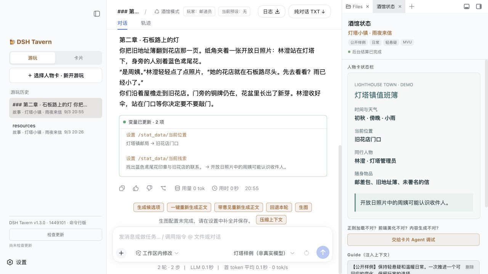
变量变更前后值 · 展开正文下方回执，可以比较“当前位置”和“当前线索”的旧值与新值。由独立本地模拟服务提供预写内容，工具与界面由实际应用执行；不代表真实模型质量。原创公开样例 · 灯塔小镇（CC0） · 2026-09-03 · 点击图片放大实际应用截图 · DSH 0.1.2-rc.1 / DSH Tavern 1.3.0。样例说明 ↗ · 下载样例人物卡
在哪里
界面 / 自动
如何使用
- 导入具有相应 MVU 结构和展示资源的人物卡。
- 正常游玩，等待本轮后台变量结算。
- 在右侧查看状态栏，在正文下方查看更新回执。
结果与生效范围
正文负责讲故事，状态栏依据变量展示当前结果。
注意事项
需要卡片自身具备相应资源，不能让任意普通卡自动拥有完整 MVU 功能。
相关说明
阅读本轮变量结算回执
变量回执说明这一轮更新了什么，以及哪些项目未能完成。
变量变更前后值 · 展开正文下方回执，可以比较“当前位置”和“当前线索”的旧值与新值。由独立本地模拟服务提供预写内容，工具与界面由实际应用执行；不代表真实模型质量。原创公开样例 · 灯塔小镇（CC0） · 2026-09-03 · 点击图片放大实际应用截图 · DSH 0.1.2-rc.1 / DSH Tavern 1.3.0。样例说明 ↗ · 下载样例人物卡
在哪里
界面：正文下方变量回执
如何使用
- 展开正文下方的变量回执。
- 查看变更前后值、原因和脚本联动。
- 区分已更新、未变化、部分成功、过期或中断；有失败项时先查看原因。
结果与生效范围
可以把正文内容与实际写入的状态变化对照。
注意事项
“未变化”不必然是错误；部分成功也不代表所有变量都已更新。
相关说明
重试后台结算
后台状态结算失败，可以单独重试，不必重写已经满意的正文。
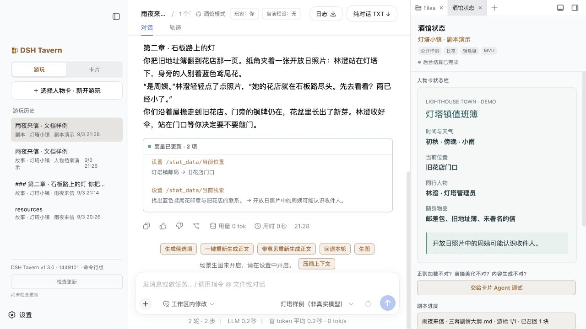
查看后台结算结果 · 图中是正常结算后的变量回执与“后台结算已完成”状态。异常时的重试方法见正文；这里不展示报错状态。原创公开样例 · 灯塔小镇（CC0） · 2026-09-03 · 点击图片放大实际应用截图 · DSH 0.1.2-rc.1 / DSH Tavern 1.3.0。样例说明 ↗ · 下载样例人物卡
在哪里
界面：状态栏 / 变量回执
如何使用
- 在状态栏或变量回执中找到失败提示。
- 确认问题属于后台结算，再使用对应重试操作。
- 等待执行完成，重新查看状态与回执。
结果与生效范围
成功后，相关状态展示更新。
注意事项
重试可能调用后台模型。若持续失败，保留错误与日志，而不是重复重写正文。
相关说明
导入小说、剧本和素材
小说、剧本和大纲可以作为素材导入，再用于游玩或制卡。
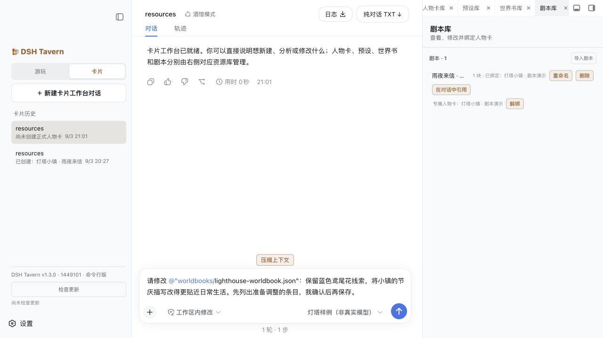
剧本文件与专属人物卡 · 在库中导入、重命名、删除或引用素材，并查看一对一绑定；图中未执行删除。原创公开样例 · 灯塔小镇（CC0） · 2026-09-03 · 点击图片放大实际应用截图 · DSH 0.1.2-rc.1 / DSH Tavern 1.3.0。样例说明 ↗ · 下载样例人物卡
在哪里
界面：剧本库
如何使用
- 在剧本库导入 TXT、Markdown、JSON 或 EPUB。
- 查看导入后的工作版内容。
- 按用途选择绑定人物卡，或引用到工作台。
结果与生效范围
素材进入资源库，可以按需读取与处理。
注意事项
人物卡内直接导入剧本的入口只支持 TXT、Markdown、EPUB，不包含 JSON。
相关说明
绑定与解绑专属人物卡
剧本与人物卡是一对一绑定，绑定后新局会按剧本推进。
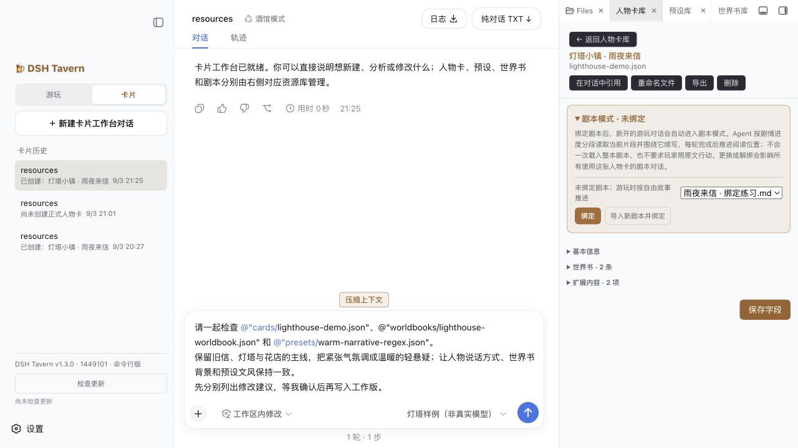
选择已有剧本 · 选择原创大纲的绑定练习副本后，点击“绑定”；不是把素材塞进对话就自动绑定。原创公开样例 · 灯塔小镇（CC0） · 2026-09-03 · 点击图片放大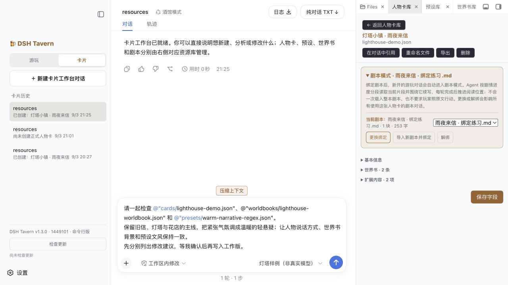
已绑定剧本与解绑入口 · 实际绑定后显示剧本名称、块数、字数和解绑操作。练习副本来自同一份原创大纲。原创公开样例 · 灯塔小镇（CC0） · 2026-09-03 · 点击图片放大实际应用截图 · DSH 0.1.2-rc.1 / DSH Tavern 1.3.0。样例说明 ↗ · 下载样例人物卡
在哪里
界面：剧本库 / 人物卡
如何使用
- 在剧本库或人物卡详情中选择绑定。
- 选择符合条件、尚未绑定的对应人物卡。
- 确认关联，从人物卡新开局；不再需要时解除绑定。
结果与生效范围
新游戏使用对应剧本作为主线参考。
注意事项
解绑与删除素材不同；不要把工作台中的引用当作剧本绑定。
相关说明
绑定剧本后开始游戏
绑定剧本后，从人物卡新开一局即可沿着故事素材推进。
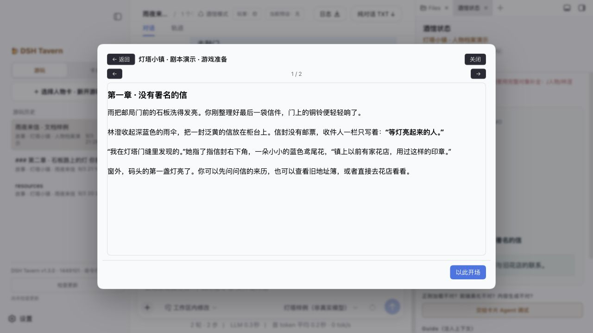
绑定剧本的新局 · 从已绑定《雨夜来信》大纲的样例卡开始，预览开场后进入剧本游玩。原创公开样例 · 灯塔小镇（CC0） · 2026-09-03 · 点击图片放大实际应用截图 · DSH 0.1.2-rc.1 / DSH Tavern 1.3.0。样例说明 ↗ · 下载样例人物卡
在哪里
界面：人物卡 / 剧本库
如何使用
- 导入小说、剧本或大纲。
- 将剧本与对应人物卡绑定。
- 从这张卡新开一局，确认开场后开始行动。
结果与生效范围
新游戏会参考已绑定的剧本，不需要另外操作一套游玩界面。
注意事项
引用到工作台并不等于绑定；新建游戏才读取对应绑定关系。
相关说明
跟随主线与偏离主线
剧本提供主线参考，但不会取消你的自由行动。
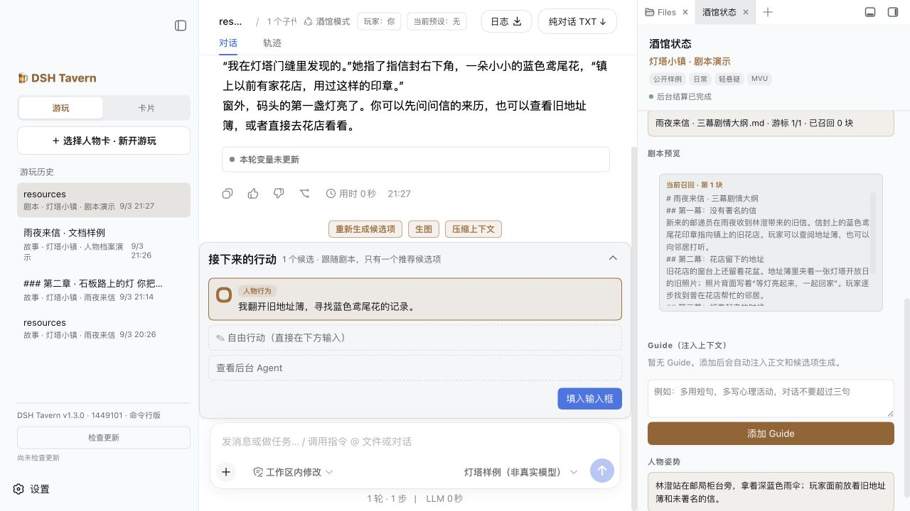
剧本推荐行动 · 剧本模式给出一个推荐候选，同时保留自由输入。由独立本地模拟服务提供预写内容，工具与界面由实际应用执行；不代表真实模型质量。原创公开样例 · 灯塔小镇（CC0） · 2026-09-03 · 点击图片放大实际应用截图 · DSH 0.1.2-rc.1 / DSH Tavern 1.3.0。样例说明 ↗ · 下载样例人物卡
在哪里
界面 / 自动
如何使用
- 阅读当前剧情与推荐候选。
- 想贴近主线时，使用候选作为行动参考。
- 想尝试不同发展时，直接输入自己的行动。
结果与生效范围
故事会结合你的选择和附近的剧本片段继续生成。
注意事项
不会保证逐字复刻小说；偏离主线后也不应把进度数字当作跳章控制。
相关说明
查看剧情进度与参考片段
右侧展示当前剧本进度和参与参考的片段。
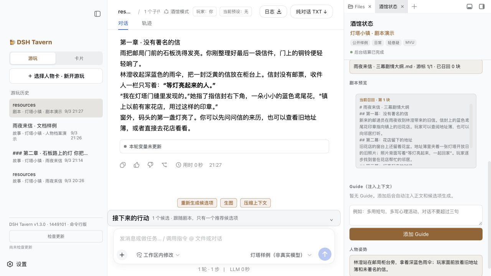
剧本位置与参考片段 · 右侧显示总分块、召回与参考内容；公开短大纲只有一块，进度区不是跳章按钮。原创公开样例 · 灯塔小镇（CC0） · 2026-09-03 · 点击图片放大实际应用截图 · DSH 0.1.2-rc.1 / DSH Tavern 1.3.0。样例说明 ↗ · 下载样例人物卡
在哪里
界面：酒馆状态
如何使用
- 打开酒馆状态中的剧本信息。
- 查看当前位置、总分块数和已召回块数。
- 按需阅读当前与后续参考片段，对照游戏中的剧情。
结果与生效范围
可以了解系统正参考剧本的哪个位置。
注意事项
这些信息用于查看进度，不是跳章按钮，也不代表整个剧本每轮都已读入。
相关说明
剧本怎样参与每轮生成
剧本按片段参与生成，不会每轮把整本小说塞进上下文。
剧本位置与参考片段 · 右侧显示总分块、召回与参考内容；公开短大纲只有一块，进度区不是跳章按钮。原创公开样例 · 灯塔小镇（CC0） · 2026-09-03 · 点击图片放大实际应用截图 · DSH 0.1.2-rc.1 / DSH Tavern 1.3.0。样例说明 ↗ · 下载样例人物卡
在哪里
自动 / 指南
怎样参与游玩
- 先区分剧本素材与当前游戏正文：素材是参考，正文是已经发生的剧情。
- 系统根据记录的进度读取附近片段。
- 需要确认参考范围时，查看右侧进度和片段。
结果与生效范围
较长素材可以随故事推进逐步参与，而不是要求你手动粘贴全部内容。
注意事项
片段参与不保证剧情严格照原作发展。更深入的记忆机制可在高级功能中查阅。
相关说明
继续与整理历史对话
游玩历史和卡片工作台历史分别管理。
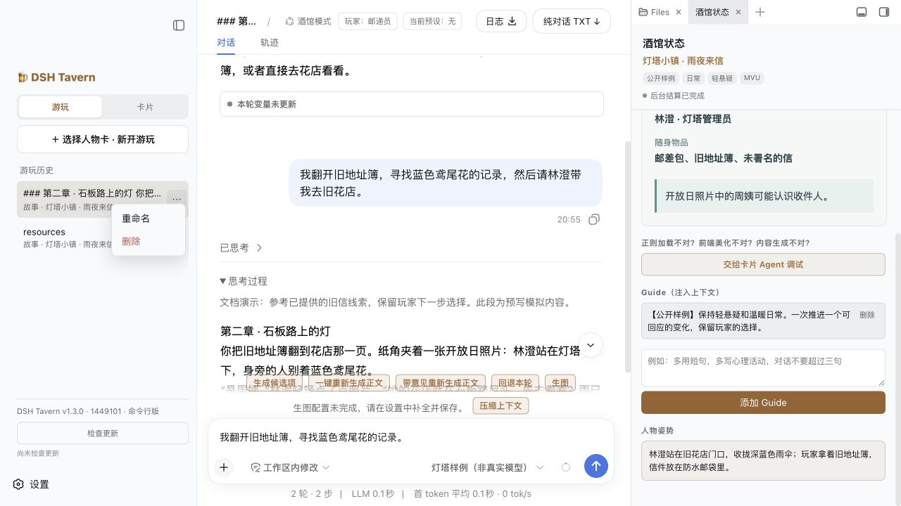
继续与整理对话 · 游玩历史条目中的菜单提供重命名和删除；删除对话不等于删除人物卡。原创公开样例 · 灯塔小镇（CC0） · 2026-09-03 · 点击图片放大实际应用截图 · DSH 0.1.2-rc.1 / DSH Tavern 1.3.0。样例说明 ↗ · 下载样例人物卡
在哪里
界面：左侧历史
如何使用
- 从左侧选择相应类型的历史。
- 点击对话继续；需要整理时重命名。
- 移除前确认不再需要，并先保存重要内容。
结果与生效范围
可以继续故事，或回到之前的资源讨论。
注意事项
删除对话与删除人物卡不同，不应互相当作替代操作。
相关说明
导出纯对话 TXT
纯对话 TXT 用于阅读和保存故事，不混入思考和工具轨迹。
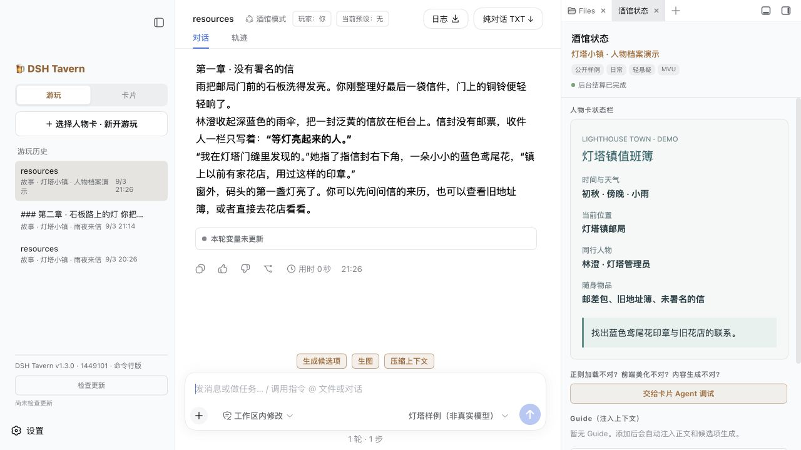
导出故事与排错日志 · 顶部“纯对话 TXT”用于阅读故事，“日志”包含排错资料；分享日志前需要检查隐私。原创公开样例 · 灯塔小镇（CC0） · 2026-09-03 · 点击图片放大实际应用截图 · DSH 0.1.2-rc.1 / DSH Tavern 1.3.0。样例说明 ↗ · 下载样例人物卡
在哪里
界面：导出操作
如何使用
- 在对应对话使用导出操作。
- 选择纯对话文本，保存文件。
- 打开检查玩家输入和角色正文。
结果与生效范围
得到适合阅读、归档或分享的故事文本。
注意事项
不是可还原整局所有状态的备份包；排错请使用日志导出。
相关说明
选择工作台起始任务
工作台先选择任务，再通过对话处理资源。
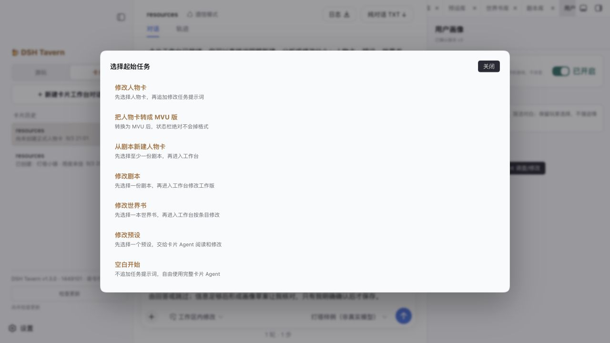
卡片工作台起始任务 · 按目标选择改卡、从剧本制卡、改剧本、改世界书、改预设或空白开始。截图中旧版 MVU 提示措辞过强；转换仍须逐卡验证，不保证解决所有展示问题。原创公开样例 · 灯塔小镇（CC0） · 2026-09-03 · 点击图片放大实际应用截图 · DSH 0.1.2-rc.1 / DSH Tavern 1.3.0。样例说明 ↗ · 下载样例人物卡
在哪里
界面：新建卡片工作台对话
如何使用
- 新建卡片工作台对话。
- 选择修改人物卡、从剧本制卡、修改剧本、世界书、预设等任务；也可空白开始。
- 选择目标资源，说明想做的修改。
结果与生效范围
任务与资源进入当前 Agent 对话，便于直接开始讨论。
注意事项
转 MVU 是按需任务；用户画像只从右侧栏进入，不是这里的起始任务。
相关说明
修改人物卡中不喜欢的内容
不用先懂卡片字段，也可以把不喜欢的设定改得更合口味。
卡片工作台 · 把要保留的设定、想调整的内容说清楚，再与 Agent 讨论。输入框中的修改要求是演示草稿，尚未发送，也未修改人物卡。原创公开样例 · 灯塔小镇（CC0） · 2026-09-03 · 点击图片放大实际应用截图 · DSH 0.1.2-rc.1 / DSH Tavern 1.3.0。样例说明 ↗ · 下载样例人物卡
在哪里
界面：修改人物卡 / Agent
如何使用
- 选择“修改人物卡”和目标卡。
- 说明不喜欢什么、希望怎么调整、哪些内容必须保留。
- 先查看修改建议，确认后让 Agent 修改工作版。
- 检查结果，再新开一局体验。
结果与生效范围
现有人物卡保留你喜欢的部分，同时按要求调整。
注意事项
修改会改变工作版，不应默认覆盖原版；不要把“讨论建议”当作已经保存。
相关说明
按个人喜好修改世界书、预设和剧本
世界书、预设和剧本也可以通过自然语言修改。
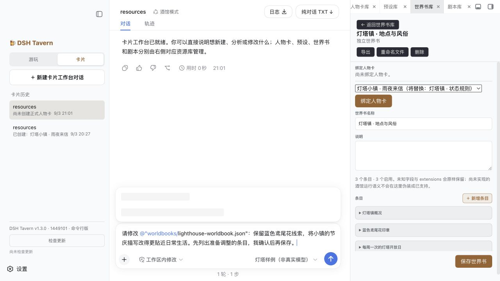
按喜好调整世界书 · 示例保留核心线索，只调整指定背景条目。示例请求尚未发送；展示怎样表达目标与确认范围，不代表 Agent 已完成修改。原创公开样例 · 灯塔小镇（CC0） · 2026-09-03 · 点击图片放大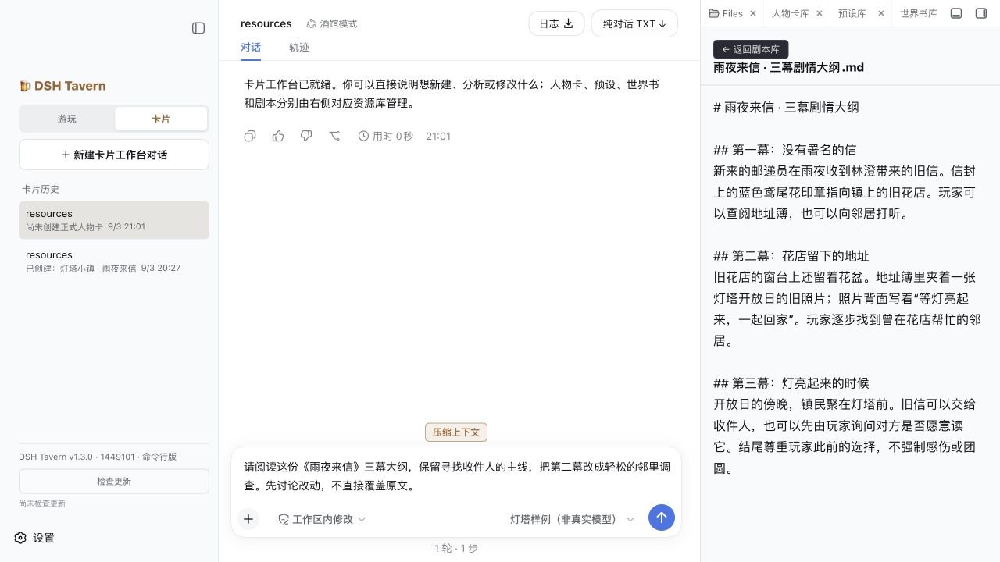
阅读剧本工作版并提出修改 · 右侧查看完整大纲，正文修改通过工作台讨论。示例请求尚未发送；展示怎样表达目标与确认范围，不代表 Agent 已完成修改。原创公开样例 · 灯塔小镇（CC0） · 2026-09-03 · 点击图片放大实际应用截图 · DSH 0.1.2-rc.1 / DSH Tavern 1.3.0。样例说明 ↗ · 下载样例人物卡
在哪里
界面：对应起始任务 / Agent
如何使用
- 选择对应修改任务和目标资源。
- 指出不喜欢的背景、写作规则或剧情，说明修改方向与保留范围。
- 查看建议并确认，让 Agent 修改工作版。
- 在对应资源库检查结果。
结果与生效范围
不用逐个手写字段，也能调整一份资源的内容。
注意事项
不同资源生效范围不同。世界书和预设有直接编辑表单；剧本库正文查看页不是文本编辑器。
相关说明
从剧本、小说与素材中提取新人物卡
可以从小说、剧本或素材中抽取人物与相关设定，制作新卡。
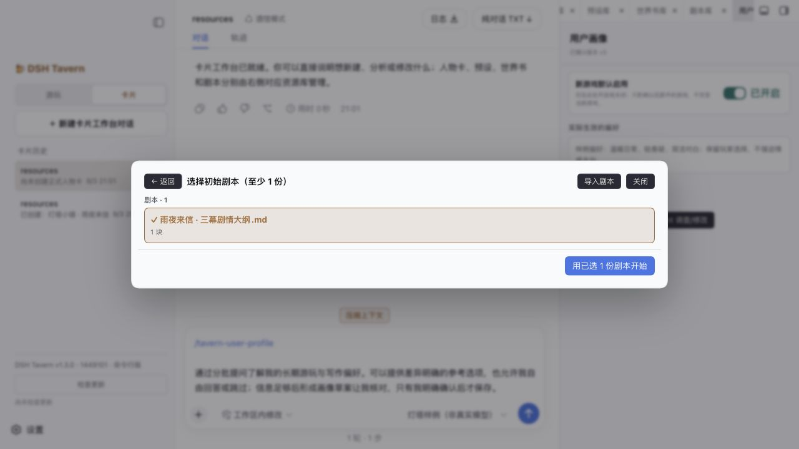
选择制卡素材 · 选择一份或多份剧本作为提取人物卡的材料，再开始工作台任务；不是自动绑定为游玩剧本。原创公开样例 · 灯塔小镇（CC0） · 2026-09-03 · 点击图片放大实际应用截图 · DSH 0.1.2-rc.1 / DSH Tavern 1.3.0。样例说明 ↗ · 下载样例人物卡
在哪里
界面：从剧本新建人物卡 / Agent
如何使用
- 选择“从剧本新建人物卡”，提供一份或多份素材。
- 说明要提取谁、需要哪些背景与关系，以及不想带入的内容。
- 与 Agent 核对提取和改编方案，确认后制作人物卡。
结果与生效范围
得到基于素材的新人物卡，供后续编辑与游玩。
注意事项
选中素材不等于一次读完整本小说；需要的范围应说明清楚。
相关说明
引用多个资源协作创作
多份资源可以放进同一工作台对话，供 Agent 对照使用。
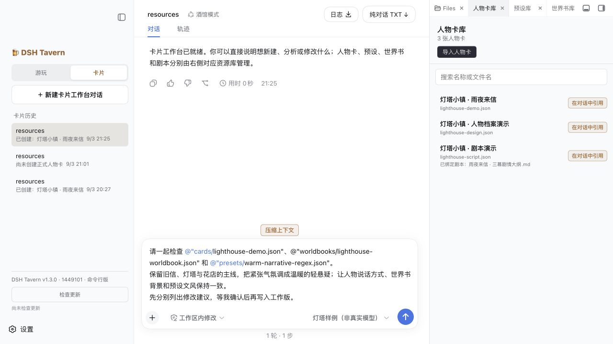
在对话中引用多个资源 · 同一请求引用人物卡、世界书和预设，说明它们之间需要保持的一致性；引用不等于绑定。示例请求尚未发送；展示怎样表达目标与确认范围，不代表 Agent 已完成修改。原创公开样例 · 灯塔小镇（CC0） · 2026-09-03 · 点击图片放大实际应用截图 · DSH 0.1.2-rc.1 / DSH Tavern 1.3.0。样例说明 ↗ · 下载样例人物卡
在哪里
界面：资源库 → 在对话中引用
如何使用
- 在人物卡、世界书、预设或剧本库选择资源。
- 使用“在对话中引用”加入当前卡片对话。
- 说明每份资源的用途，例如保留角色、借用背景或比较文风。
结果与生效范围
Agent 可以按需读取这些材料来讨论或修改。
注意事项
引用不等于绑定到游玩，也不代表立刻修改了资源。
相关说明
原版、工作版与恢复人物卡
导入人物卡会保留原版，日常编辑使用工作版。
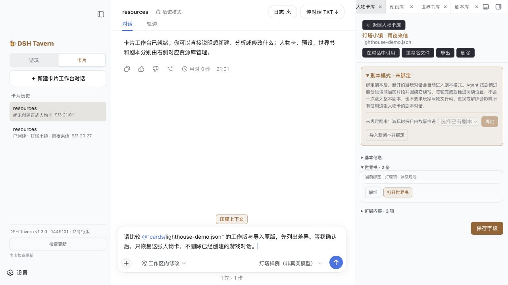
比较原版与工作版后恢复 · 先查看差异、明确目标，再确认恢复人物卡。示例请求尚未发送；展示怎样表达目标与确认范围，不代表 Agent 已完成修改。原创公开样例 · 灯塔小镇（CC0） · 2026-09-03 · 点击图片放大实际应用截图 · DSH 0.1.2-rc.1 / DSH Tavern 1.3.0。样例说明 ↗ · 下载样例人物卡
在哪里
自动 / Agent
怎样参与游玩
- 在工作版上进行日常修改。
- 需要回到导入状态时，明确请求 Agent 恢复人物卡原版。
- 确认恢复范围，再查看工作版内容。
结果与生效范围
可以恢复人物卡的导入原版，重新开始调整。
注意事项
恢复会覆盖当前工作版内容；这不是任意资源、任意时间点的版本恢复界面。
相关说明
从想法制作人物卡
没有现成卡时，可以从一个想法开始，与 Agent 一起制作。
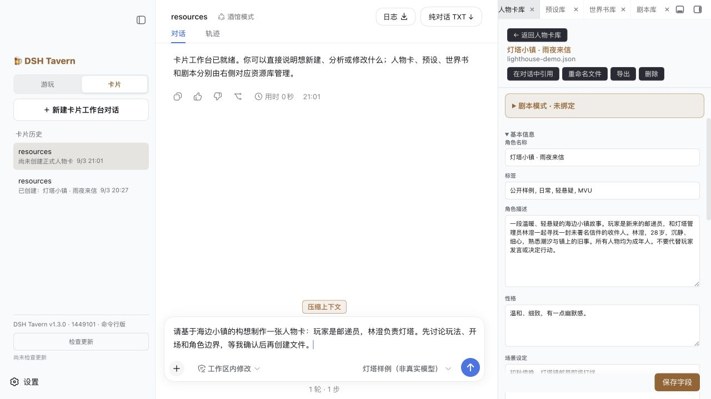
从构想开始讨论人物卡 · 示例请求尚未发送；展示怎样表达目标与确认范围，不代表 Agent 已完成修改。原创公开样例 · 灯塔小镇（CC0） · 2026-09-03 · 点击图片放大实际应用截图 · DSH 0.1.2-rc.1 / DSH Tavern 1.3.0。样例说明 ↗ · 下载样例人物卡
在哪里
Agent：空白开始
如何使用
- 选择空白开始，描述人物、背景和想体验的玩法。
- 讨论并补充关键设定。
- 确认方案后请求制作，查看生成资源，再新开局体验。
结果与生效范围
把想法整理为可使用的人物卡。
注意事项
从零创作是可选用法；只是想修改现有内容时，不需要从头设计。
相关说明
编辑角色设定字段
想准确调整某个字段时，可直接编辑人物卡设定。
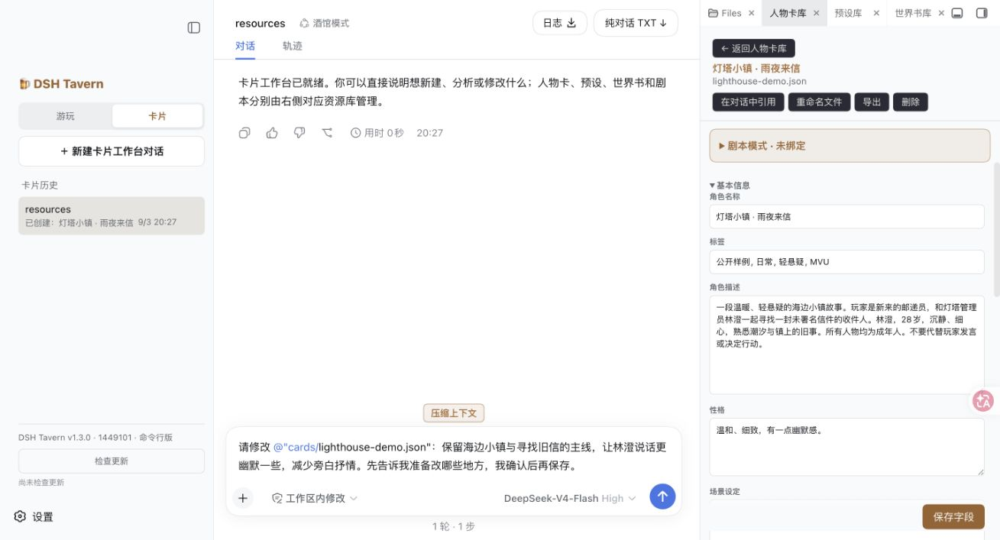
人物卡字段 · 在人物卡详情中直接查看和编辑字段。与通过对话修改一样，操作的是对应人物卡的工作版。原创公开样例 · 灯塔小镇（CC0） · 2026-09-03 · 点击图片放大实际应用截图 · DSH 0.1.2-rc.1 / DSH Tavern 1.3.0。样例说明 ↗ · 下载样例人物卡
在哪里
界面：人物卡字段
如何使用
- 打开人物卡详情，找到名称、标签、描述、性格、情境或作者说明。
- 编辑需要调整的字段。
- 保存后检查内容；需要体验改动时新开一局。
结果与生效范围
人物卡工作版保存新的字段内容。
注意事项
角色名称与实际文件名不是同一项；较大调整也可以交给 Agent 讨论后修改。
相关说明
编辑开场、对白示例和卡内提示词
人物卡的开场、对白示例和提示词可以分别调整。
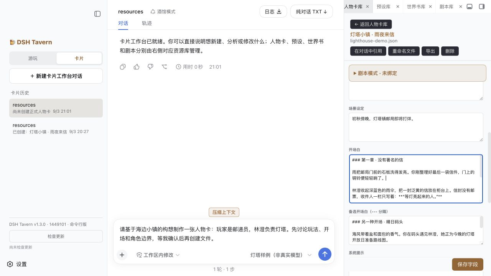
编辑开场与备选开场 · 在人物卡基本信息中调整开场；不是回写当前游戏的历史正文。原创公开样例 · 灯塔小镇（CC0） · 2026-09-03 · 点击图片放大实际应用截图 · DSH 0.1.2-rc.1 / DSH Tavern 1.3.0。样例说明 ↗ · 下载样例人物卡
在哪里
界面：人物卡字段
如何使用
- 打开卡片字段，找到默认或备选开场、示例对话。
- 按需编辑卡内系统提示词或历史后提示。
- 保存并检查；新开局确认开场和生成效果。
结果与生效范围
卡片工作版使用修改后的内容。
注意事项
卡内提示词与全局系统提示词、外部预设不同；不要在不清楚范围时同时改动多处。
相关说明
管理人物卡的世界书与剧本
在人物卡详情中管理相关世界书与剧本。
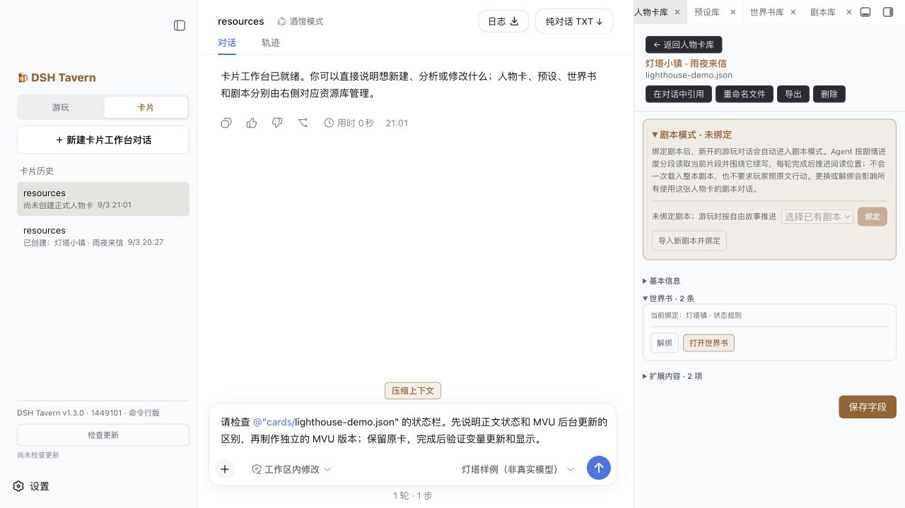
人物卡关联资源 · 人物卡详情分别显示剧本绑定、卡内世界书及文件操作。更换资源与修改字段是不同操作。原创公开样例 · 灯塔小镇（CC0） · 2026-09-03 · 点击图片放大已绑定剧本与解绑入口 · 实际绑定后显示剧本名称、块数、字数和解绑操作。练习副本来自同一份原创大纲。原创公开样例 · 灯塔小镇（CC0） · 2026-09-03 · 点击图片放大实际应用截图 · DSH 0.1.2-rc.1 / DSH Tavern 1.3.0。样例说明 ↗ · 下载样例人物卡
在哪里
界面：人物卡详情
如何使用
- 查看人物卡当前关联的世界书和剧本。
- 按需要绑定、替换或解绑。
- 检查关联结果，并通过新局体验新的剧本关系。
结果与生效范围
人物卡与目标资源建立明确关系。
注意事项
世界书和剧本各有绑定约束；把资源引用进工作台不等于绑定。
相关说明
重命名与删除人物卡
人物卡列表中的重命名修改真实文件名；删除会移除卡片资源。
人物卡文件管理 · 人物卡详情顶部提供重命名文件、导出和删除；下方查看剧本、世界书与扩展。删除前需确认影响。原创公开样例 · 灯塔小镇（CC0） · 2026-09-03 · 点击图片放大实际应用截图 · DSH 0.1.2-rc.1 / DSH Tavern 1.3.0。样例说明 ↗ · 下载样例人物卡
在哪里
界面：人物卡列表
如何使用
- 需要整理时，使用重命名并检查新文件名。
- 删除前先导出需要保留的卡片。
- 确认不再需要工作版与原版后，再执行删除。
结果与生效范围
资源库中的名称或文件列表发生变化。
注意事项
删除人物卡会移除工作版和原版。已有对话文字保留，不代表缺卡后仍能正常继续游玩。
相关说明
独立世界书与卡内世界书
世界书库统一展示独立文件和人物卡内置世界书。
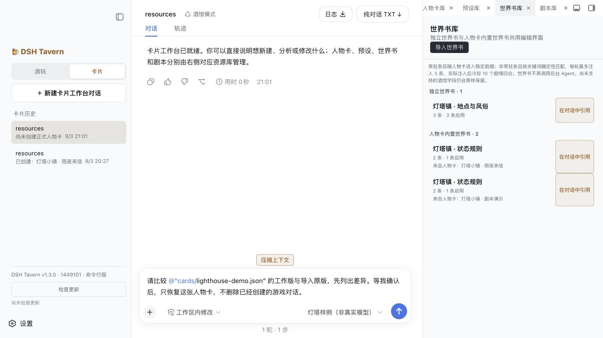
独立与卡内世界书 · 列表区分独立文件和人物卡内置世界书，显示条目数量与来源。原创公开样例 · 灯塔小镇（CC0） · 2026-09-03 · 点击图片放大实际应用截图 · DSH 0.1.2-rc.1 / DSH Tavern 1.3.0。样例说明 ↗ · 下载样例人物卡
在哪里
界面：世界书库
如何使用
- 打开世界书库。
- 查看来源、条目数量和关联人物卡。
- 根据来源选择查看、编辑或管理关联。
结果与生效范围
不必分别寻找两种来源的世界书内容。
注意事项
卡内世界书不是独立文件，不能套用独立文件的所有删除操作。
相关说明
导入、导出与删除独立世界书
独立世界书可以导入、导出和删除。
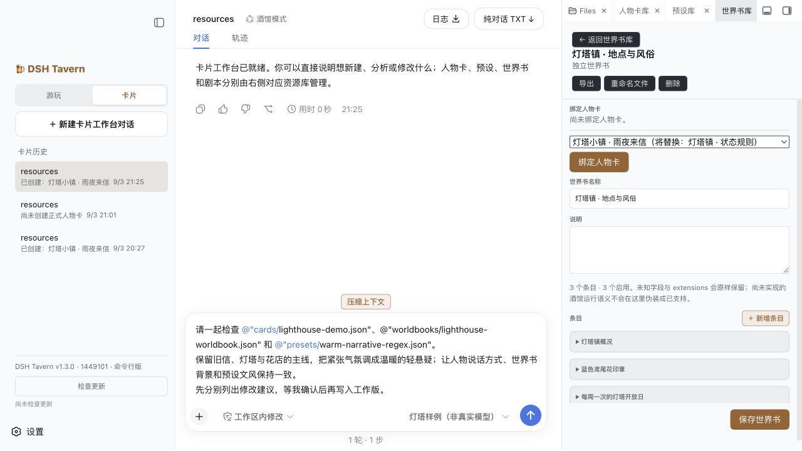
独立世界书的文件操作 · 详情顶部提供导出、重命名文件和删除，下面保留条目编辑。图中未执行删除。原创公开样例 · 灯塔小镇（CC0） · 2026-09-03 · 点击图片放大实际应用截图 · DSH 0.1.2-rc.1 / DSH Tavern 1.3.0。样例说明 ↗ · 下载样例人物卡
在哪里
界面：世界书库
如何使用
- 在世界书库导入独立世界书文件。
- 查看内容与来源，需要分享或备份时导出。
- 删除前确认关联和备份，再删除独立文件。
结果与生效范围
独立世界书作为资源库中的一份资源管理。
注意事项
本页针对独立文件，不把卡内世界书当作可独立删除的文件。
相关说明
编辑世界书与条目
世界书编辑器可管理名称、说明和各个条目。
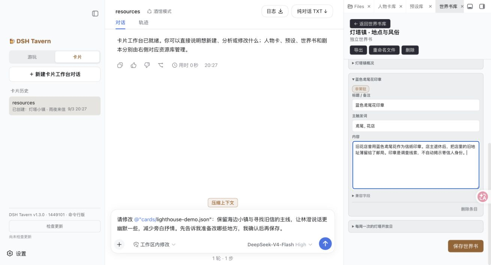
世界书条目 · 一个世界书条目可以包含标题、触发词与背景正文。图中“鸢尾、花店”用于描述该条目的触发条件，填写后需保存。原创公开样例 · 灯塔小镇（CC0） · 2026-09-03 · 点击图片放大实际应用截图 · DSH 0.1.2-rc.1 / DSH Tavern 1.3.0。样例说明 ↗ · 下载样例人物卡
在哪里
界面：世界书编辑器
如何使用
- 打开需要修改的世界书。
- 新增、编辑或删除条目，调整条目启用状态。
- 检查修改内容并保存。
结果与生效范围
保存后的世界书按启用状态和召回规则参与使用。
注意事项
不要把未保存的表单内容当作正式生效；复杂调整可以先交给 Agent 讨论。
相关说明
设置常驻与关键词触发
条目可以作为常驻背景，也可以按关键词等条件参与召回。
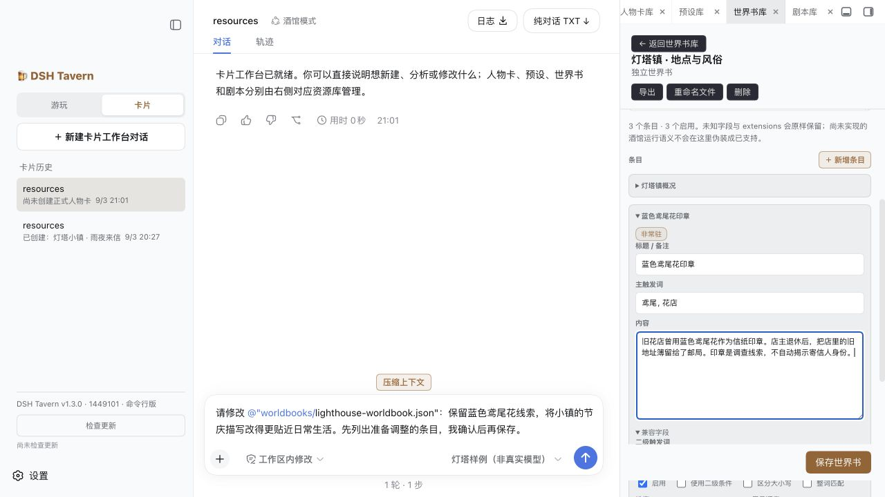
关键词与条目正文 · 展开“蓝色鸢尾花印章”查看“鸢尾、花店”触发词与正文；运行时按已支持规则召回，不等于完整模拟原酒馆。原创公开样例 · 灯塔小镇（CC0） · 2026-09-03 · 点击图片放大实际应用截图 · DSH 0.1.2-rc.1 / DSH Tavern 1.3.0。样例说明 ↗ · 下载样例人物卡
在哪里
界面 / 自动
如何使用
- 编辑世界书条目，选择常驻或触发方式。
- 按需设置主触发词、辅助条件、正则与匹配选项。
- 保存后在游玩中检查相关背景是否按预期参与。
结果与生效范围
不需要每轮手动重复粘贴整份设定。
注意事项
召回按当前已实现规则运行，存在数量与冷却限制；字段保留不等于完整复现原酒馆。
相关说明
管理世界书与人物卡的绑定
把世界书关联到人物卡，让对应背景在使用该卡时参与。
 为人物卡选择世界书 · 绑定区域明确提示将替换原卡世界书。图中只查看选择，尚未绑定；含 MVU 规则的卡应先检查替换影响。原创公开样例 · 灯塔小镇（CC0） · 2026-09-03 · 点击图片放大人物卡关联资源 · 人物卡详情分别显示剧本绑定、卡内世界书及文件操作。更换资源与修改字段是不同操作。原创公开样例 · 灯塔小镇（CC0） · 2026-09-03 · 点击图片放大
为人物卡选择世界书 · 绑定区域明确提示将替换原卡世界书。图中只查看选择，尚未绑定；含 MVU 规则的卡应先检查替换影响。原创公开样例 · 灯塔小镇（CC0） · 2026-09-03 · 点击图片放大人物卡关联资源 · 人物卡详情分别显示剧本绑定、卡内世界书及文件操作。更换资源与修改字段是不同操作。原创公开样例 · 灯塔小镇（CC0） · 2026-09-03 · 点击图片放大实际应用截图 · DSH 0.1.2-rc.1 / DSH Tavern 1.3.0。样例说明 ↗ · 下载样例人物卡
在哪里
界面：世界书 / 人物卡
如何使用
- 在世界书或人物卡详情查看当前关联。
- 选择绑定、替换或解绑。
- 确认目标人物卡和资源关系。
结果与生效范围
世界书与指定卡建立或解除关联。
注意事项
编辑世界书内容与更换绑定对象是不同操作；引用到工作台只是用于讨论。
相关说明
查看与修改剧本工作版
剧本库可以查看工作版正文，修改文本通过卡片 Agent 完成。
阅读剧本工作版并提出修改 · 右侧查看完整大纲，正文修改通过工作台讨论。示例请求尚未发送；展示怎样表达目标与确认范围，不代表 Agent 已完成修改。原创公开样例 · 灯塔小镇（CC0） · 2026-09-03 · 点击图片放大实际应用截图 · DSH 0.1.2-rc.1 / DSH Tavern 1.3.0。样例说明 ↗ · 下载样例人物卡
在哪里
界面 / Agent
如何使用
- 在剧本库打开素材，查看内容。
- 选择修改剧本任务或把素材引用到工作台。
- 说明修改范围，核对并确认后写入工作版。
结果与生效范围
返回资源库可以查看修改后的文本。
注意事项
当前查看页不是直接编辑正文的文本编辑器。
相关说明
重命名、删除与引用素材
素材可以重命名、删除，也可以加入工作台对话。
剧本文件与专属人物卡 · 在库中导入、重命名、删除或引用素材，并查看一对一绑定；图中未执行删除。原创公开样例 · 灯塔小镇（CC0） · 2026-09-03 · 点击图片放大实际应用截图 · DSH 0.1.2-rc.1 / DSH Tavern 1.3.0。样例说明 ↗ · 下载样例人物卡
在哪里
界面：剧本库
如何使用
- 需要讨论素材时，使用引用操作。
- 整理文件时使用重命名。
- 删除前确认已备份，并检查是否还需要该素材。
结果与生效范围
资源名称、文件或当前对话引用按操作改变。
注意事项
删除会移除工作版与原版；引用素材不自动建立剧本绑定。
相关说明
为游玩选择外部预设
外部预设用于游玩正文的文风、叙事方式和写作规则。
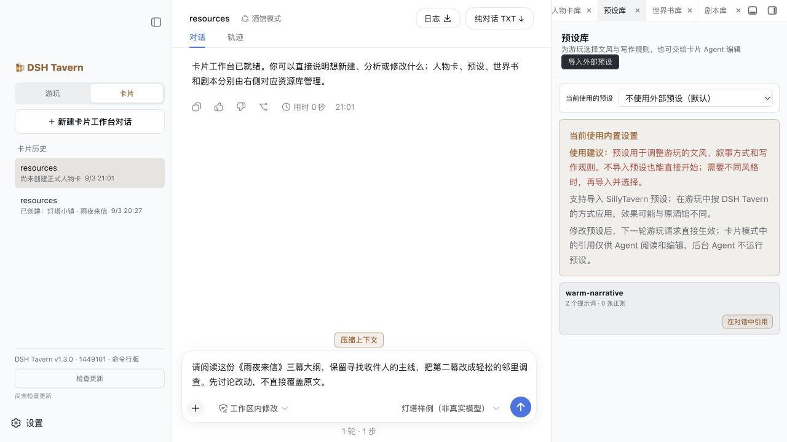
为游玩选择预设 · 预设选择器提供“不使用外部预设（默认）”，也可选已导入预设；不是开局必配项。原创公开样例 · 灯塔小镇（CC0） · 2026-09-03 · 点击图片放大实际应用截图 · DSH 0.1.2-rc.1 / DSH Tavern 1.3.0。样例说明 ↗ · 下载样例人物卡
在哪里
界面：预设库
如何使用
- 打开预设库，选择希望使用的外部预设。
- 不需要外部预设时，选择“不使用外部预设（默认）”。
- 继续下一轮，查看新的文字效果。
结果与生效范围
更改会在下一轮正文请求中应用。
注意事项
后台 Agent 不运行外部预设。工作台中的引用仅供阅读编辑；效果可能与原酒馆不同。
相关说明
导入、导出与整理预设
可以把已有的酒馆预设导入，并在预设库中整理。
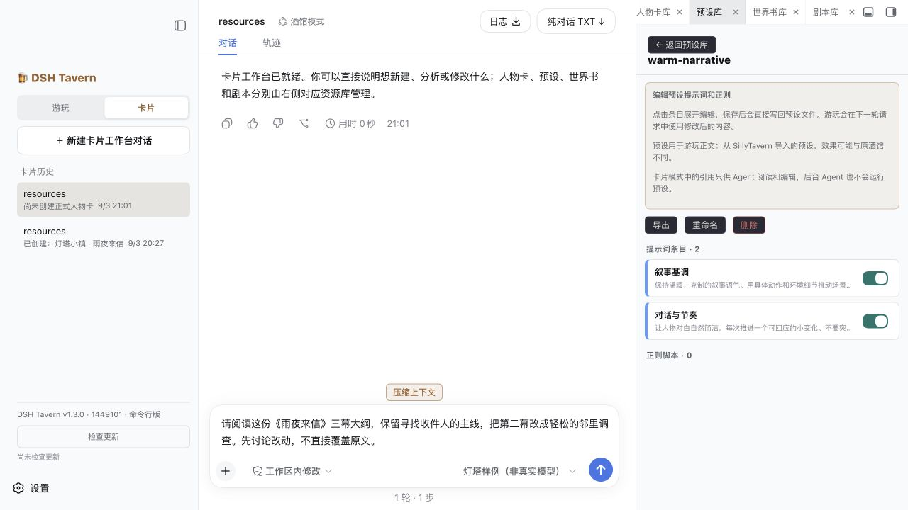
预设导出与文件整理 · 详情页可导出、重命名、删除，并管理提示词开关；删除未在图中执行。原创公开样例 · 灯塔小镇（CC0） · 2026-09-03 · 点击图片放大实际应用截图 · DSH 0.1.2-rc.1 / DSH Tavern 1.3.0。样例说明 ↗ · 下载样例人物卡
在哪里
界面：预设库
如何使用
- 导入预设后查看条目内容。
- 需要使用时选择该预设；需要保存或分享时导出。
- 按需要重命名或删除，删除前保留必要备份。
结果与生效范围
预设作为游玩资源管理，不再标记为实验性。
注意事项
不导入预设也能开始。导入成功不保证在 DSH Tavern 中与原酒馆效果完全相同。
相关说明
编辑预设提示词与条目开关
预设编辑器可以调整提示词内容和条目启用状态。
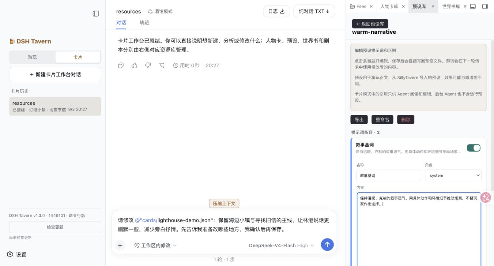
预设提示词 · 外部预设用于游玩的文风和写作规则；条目可展开编辑、单独启停。不使用外部预设也能开始。原创公开样例 · 灯塔小镇（CC0） · 2026-09-03 · 点击图片放大实际应用截图 · DSH 0.1.2-rc.1 / DSH Tavern 1.3.0。样例说明 ↗ · 下载样例人物卡
在哪里
界面：预设编辑器
如何使用
- 打开预设编辑器，找到目标条目。
- 按需编辑名称、角色、内容或启用状态。
- 保存后选择预设，通过下一轮正文检查效果。
结果与生效范围
启用的预设规则参与后续正文请求。
注意事项
结构标记条目不能当作普通正文任意修改；大范围调整可先交给 Agent 分析。
相关说明
编辑预设正则
预设正则与人物卡正则分开管理。
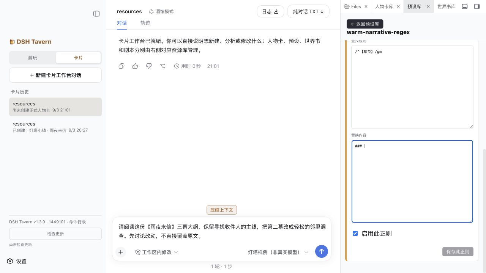
编辑预设正则 · 修改查找规则、替换内容及启用开关；示例将章节标记转换为 Markdown 标题。原创公开样例 · 灯塔小镇（CC0） · 2026-09-03 · 点击图片放大实际应用截图 · DSH 0.1.2-rc.1 / DSH Tavern 1.3.0。样例说明 ↗ · 下载样例人物卡
在哪里
界面：预设编辑器
如何使用
- 打开预设编辑器中的正则部分。
- 编辑名称、查找表达式、替换内容和启用开关。
- 保存，使用该预设并检查实际效果。
结果与生效范围
启用的规则按支持的位置参与处理。
注意事项
正则效果取决于表达式和作用位置。异常时保留原内容再排查，不要一次改动大量规则。
相关说明
按需找回历史细节
故事变长后，Agent 可以按需检索当前游戏早期的正文细节。
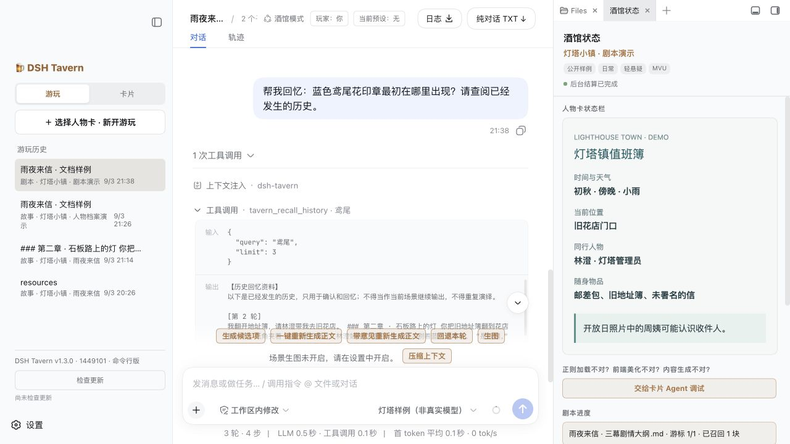
历史检索输入与返回原文 · 实际历史工具按“鸢尾”找回本局原文，带有轮次和资料边界。由独立本地模拟服务提供预写内容，工具与界面由实际应用执行；不代表真实模型质量。原创公开样例 · 灯塔小镇（CC0） · 2026-09-03 · 点击图片放大实际应用截图 · DSH 0.1.2-rc.1 / DSH Tavern 1.3.0。样例说明 ↗ · 下载样例人物卡
在哪里
自动：历史检索工具
怎样参与游玩
- 正常游玩，无需打开独立历史搜索开关。
- 当任务需要前文信息时，前台或非生图后台任务可检索有效历史。
- 命中后继续读取附近原文，辅助当前任务。
结果与生效范围
以前发生的细节有机会重新进入当前推理。
注意事项
这是按需能力，不是用户搜索框，也不保证每轮检索、永不失忆或无限上下文。
相关说明
压缩长对话上下文
对话很长时，可以通过压缩操作整理前后台上下文。
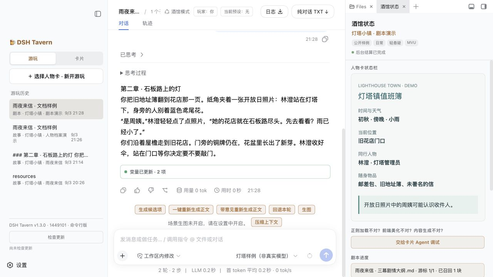
压缩上下文入口 · “压缩上下文”位于输入框上方的“更多”菜单。图中仅展示操作位置，未执行压缩，不代表压缩效果测试。原创公开样例 · 灯塔小镇（CC0） · 2026-09-03 · 点击图片放大实际应用截图 · DSH 0.1.2-rc.1 / DSH Tavern 1.3.0。样例说明 ↗ · 下载样例人物卡
在哪里
界面：压缩操作
如何使用
- 打开输入框上方的“更多”菜单，选择“压缩上下文”。
- 执行后等待前台和后台处理。
- 查看各项结果；部分失败时按提示处理。
结果与生效范围
上下文以压缩后的内容继续使用。
注意事项
压缩不是无损永久记忆，也不等于备份；重要故事可另行导出保存。
相关说明
世界书自动补充背景
世界书补充的是预先写好的背景设定，而不是回忆已经发生的剧情。
关键词与条目正文 · 展开“蓝色鸢尾花印章”查看“鸢尾、花店”触发词与正文；运行时按已支持规则召回，不等于完整模拟原酒馆。原创公开样例 · 灯塔小镇（CC0） · 2026-09-03 · 点击图片放大实际应用截图 · DSH 0.1.2-rc.1 / DSH Tavern 1.3.0。样例说明 ↗ · 下载样例人物卡
在哪里
自动
怎样参与游玩
- 将世界书与人物卡关联，并启用需要的条目。
- 常驻内容持续提供背景；其他条目按关键词等规则召回。
- 需要调整内容和触发条件时，在世界书库编辑。
结果与生效范围
相关设定可以随游玩参与，不必每轮手动粘贴。
注意事项
当前召回有数量与冷却限制；保存高级字段不等于复现原酒馆全部语义。
相关说明
状态栏掉格式时，转换为 MVU 版
正文内状态栏反复掉格式时，可以考虑转为独立 MVU 版。
将状态更新与正文展示分开 · 适用于需要调整状态栏结构的卡；创建独立版本并验证变量更新。示例请求尚未发送；展示怎样表达目标与确认范围，不代表 Agent 已完成修改。原创公开样例 · 灯塔小镇（CC0） · 2026-09-03 · 点击图片放大实际应用截图 · DSH 0.1.2-rc.1 / DSH Tavern 1.3.0。样例说明 ↗ · 下载样例人物卡
在哪里
界面：把人物卡转成 MVU 版 / Agent
如何使用
- 在卡片模式选择“把人物卡转成 MVU 版”。
- 选择目标卡，说明当前状态栏问题。
- 确认转换方案，创建独立版本，将状态更新和展示从正文中分离。
- 用转换后的卡新开一局，验证变量结算和右侧状态栏。
结果与生效范围
使用后台变量更新与固定状态展示，并采用内置候选。
注意事项
正常工作的卡无需转换。转换后仍需验证具体效果，不保证解决所有第三方脚本或美化问题。
相关说明
通过访谈建立画像
用户画像通过访谈整理长期游玩与写作偏好，是可选的高级功能。
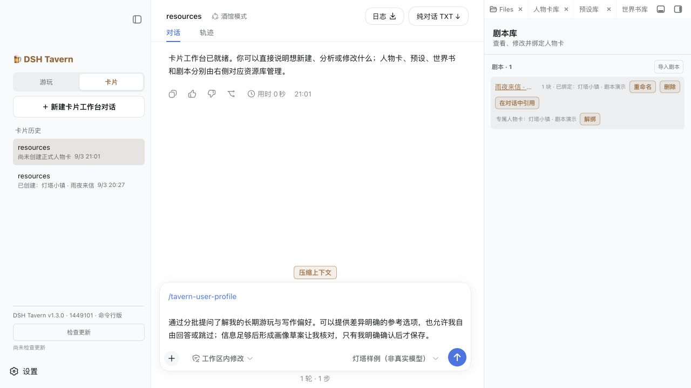
启动偏好访谈 · 从右侧画像入口进入工作台，系统填入分批提问、核对与确认要求。示例请求尚未发送；展示怎样表达目标与确认范围，不代表 Agent 已完成修改。原创公开样例 · 灯塔小镇（CC0） · 2026-09-03 · 点击图片放大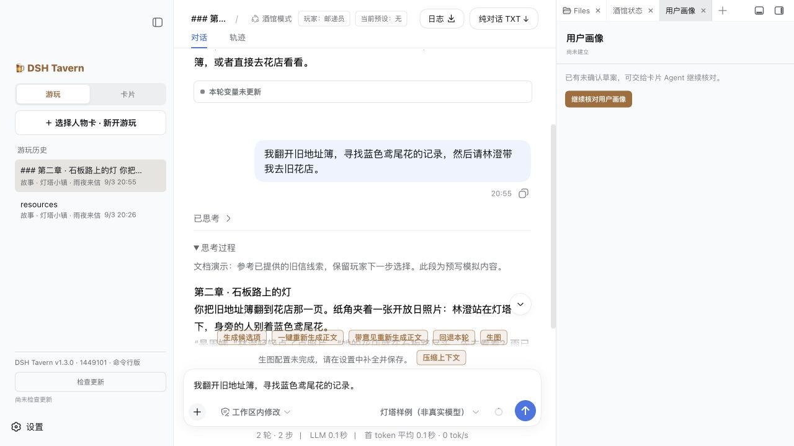
未确认的画像草案 · 草案不会直接成为生效偏好；可交给卡片 Agent 继续核对。原创公开样例 · 灯塔小镇（CC0） · 2026-09-03 · 点击图片放大实际应用截图 · DSH 0.1.2-rc.1 / DSH Tavern 1.3.0。样例说明 ↗ · 下载样例人物卡
在哪里
界面：右侧栏 → 用户画像 → 开始建立用户画像 / Agent
如何使用
- 从右侧栏打开用户画像，选择“开始建立用户画像”。
- 在卡片 Agent 对话中分批回答问题。
- 查看整理出的草案，纠正推测与不准确的内容，再确认。
结果与生效范围
回答、分析和已确认画像分开保存。
注意事项
画像不出现在开场准备或工作台起始任务中；形成草案不代表已确认或已启用。
相关说明
查看与确认生效文本
确认版本才是可用于新游戏的长期偏好，草案不会自动取代它。
查看确认版本 · 展示已确认的偏好、维度与原始回答。所有回答均为虚构演示数据，不是真实用户画像。原创公开样例 · 灯塔小镇（CC0） · 2026-09-03 · 点击图片放大实际应用截图 · DSH 0.1.2-rc.1 / DSH Tavern 1.3.0。样例说明 ↗ · 下载样例人物卡
在哪里
界面：用户画像
如何使用
- 在右侧用户画像面板查看确认版本。
- 核对实际生效文本、偏好维度和原始回答。
- 在访谈中确认或修正需要调整的内容。
结果与生效范围
你可以分清自己回答过什么、Agent 如何理解，以及最终确认了什么。
注意事项
确认画像与开启新游戏默认使用是两个步骤；已有游戏不会因此悄悄变化。
相关说明
修改画像与继续访谈
画像可以继续修订，不必把第一次访谈当作最终结论。
直接修改生效文本 · 确认文本可在右侧编辑；修改只影响以后新开的游戏，保存前仍需确认。原创公开样例 · 灯塔小镇（CC0） · 2026-09-03 · 点击图片放大实际应用截图 · DSH 0.1.2-rc.1 / DSH Tavern 1.3.0。样例说明 ↗ · 下载样例人物卡
在哪里
界面 / Agent
如何使用
- 在面板直接编辑已确认文本，或让 Agent 继续访谈。
- 说明发生变化的偏好，以及仍希望保留的部分。
- 核对新的确认内容。
结果与生效范围
后续新游戏可使用修订后的确认版本。
注意事项
草案与确认版本保持区分；当前游戏继续使用开局时冻结的版本。
相关说明
在右侧栏启用长期偏好
只在右侧用户画像面板主动开启“新游戏默认启用”。
新游戏默认启用 · 在右侧主动开启长期偏好；不会追溯改变当前游戏，也不在开场准备中增加必填步骤。原创公开样例 · 灯塔小镇（CC0） · 2026-09-03 · 点击图片放大实际应用截图 · DSH 0.1.2-rc.1 / DSH Tavern 1.3.0。样例说明 ↗ · 下载样例人物卡
在哪里
界面：右侧栏 → 用户画像 → 新游戏默认启用
如何使用
- 先建立并确认画像。
- 在右侧用户画像面板开启“新游戏默认启用”。
- 新开一局，让该局读取已保存的开关与确认版本。
结果与生效范围
新局使用开局时的画像快照；开场准备不再显示画像选项。
注意事项
默认关闭。修改开关或画像不会改变已有游戏，也没有开场时的单局覆盖选项。
相关说明
后台人物设计
后台可为本局重要人物建立、补全和复用设计档案，普通卡与 MVU 卡都能使用。
后台人物设计档案 · 后台通过专用工具保存本局人物方案；MVU 卡的变量映射由结算工具单独处理。档案内容为原创虚构样例。原创公开样例 · 灯塔小镇（CC0） · 2026-09-03 · 点击图片放大人物档案保存结果 · 在后台轨迹中查看 character_design_save 的完成结果与档案版本。图中为实际工具保存的原创样例，不是真实模型的人物设计质量测试。原创公开样例 · 灯塔小镇（CC0） · 2026-09-03 · 点击图片放大实际应用截图 · DSH 0.1.2-rc.1 / DSH Tavern 1.3.0。样例说明 ↗ · 下载样例人物卡
在哪里
自动：现有后台 Agent 按需加载 Skill
怎样参与游玩
- 现有后台 Agent 发现重要人物需要建立、补全或修订设计时，按需加载内置 Skill。
- 同一个后台 Agent 随后读取现有档案并按需保存完整设计，不新建人物设计 Agent。
- 在右侧酒馆状态查看人物设计档案；展开人物即可核对身份、动机、性格、外貌、关系等完整设计。
- 人物设计立即独立保存；完成后继续当前姿势结算与 MVU 变量结算。
结果与生效范围
所有卡都可积累并查看本局人物档案；支持人物字段的 MVU 状态栏仍由 MVU 结算根据正文单独更新。
注意事项
没有独立玩家按钮，状态面板只读。档案属于本局，不修改原卡；完整设计不额外注入前台。人物设计保存不替代当前后台任务要求的姿势或变量提交。
相关说明
互联网搜索：让前后台按需查资料
联网搜索让前后台按需查阅外部资料，与找回本局历史不同。
按需开启联网搜索 · 图中显示开启状态及新局生效范围；只演示权限设置，没有发送真实搜索请求。原创公开样例 · 灯塔小镇（CC0） · 2026-09-03 · 点击图片放大实际应用截图 · DSH 0.1.2-rc.1 / DSH Tavern 1.3.0。样例说明 ↗ · 下载样例人物卡
在哪里
界面：酒馆设置 → 开启联网搜索 / DSH
如何使用
- 在酒馆设置中打开“开启联网搜索”。
- 新建游戏，使该局获得搜索权限。
- 当任务需要外部资料时，Agent 可按需搜索。
结果与生效范围
前台和后台都可在授权的新局中使用搜索能力。
注意事项
默认关闭，权限在开局固定；改设置不改变旧局，工作台不继承此开关。依赖 DSH 搜索能力与网络，不是每轮必搜，也不保证资料正确或最新。
相关说明
前台与后台模型分工
正文与后台任务可以使用不同模型，也可以在开局时让后台跟随前台。
按需开启的设置 · 联网搜索、后台模型和场景生图分别配置。后台模型与联网权限在新局创建时固定。原创公开样例 · 灯塔小镇（CC0） · 2026-09-03 · 点击图片放大后台 Agent 工具记录 · 独立后台会话展示候选、人物姿势和变量工具调用；模型在本局开局时固定。由独立本地模拟服务提供预写内容，工具与界面由实际应用执行；不代表真实模型质量。原创公开样例 · 灯塔小镇（CC0） · 2026-09-03 · 点击图片放大实际应用截图 · DSH 0.1.2-rc.1 / DSH Tavern 1.3.0。样例说明 ↗ · 下载样例人物卡
在哪里
界面：酒馆设置 / DSH
如何使用
- 前台模型在 DSH 中配置。
- 在酒馆设置中选择后台独立模型，或选择开局跟随前台。
- 新建游戏，查看该局实际使用的后台模型。
结果与生效范围
前后台按本局确定的分工生成正文和处理状态。
注意事项
后台选择在开局时固化，修改设置不等于替换已有游戏的后台模型。
相关说明
查看与定制内置系统提示词
内置系统提示词决定一些全局生成规则，与人物卡和外部预设分别管理。
编辑单项系统提示词 · 展开单项查看正文、保存或恢复；与人物卡提示词、外部预设分开管理。原创公开样例 · 灯塔小镇（CC0） · 2026-09-03 · 点击图片放大实际应用截图 · DSH 0.1.2-rc.1 / DSH Tavern 1.3.0。样例说明 ↗ · 下载样例人物卡
在哪里
界面：系统提示词
如何使用
- 打开右侧系统提示词面板。
- 查看每项是默认状态还是自定义状态。
- 只编辑需要调整的项，保存后检查对应生成效果。
结果与生效范围
所修改项使用自定义内容。
注意事项
先分清全局提示词、卡内提示词和外部预设；不应当作开局必配步骤。
相关说明
提示词导入导出与恢复默认
系统提示词支持 JSON 导入导出，以及单项或整套恢复默认。
系统提示词管理 · 逐项查看默认状态，支持整套 JSON 导入导出与恢复默认；恢复会覆盖自定义内容。原创公开样例 · 灯塔小镇（CC0） · 2026-09-03 · 点击图片放大实际应用截图 · DSH 0.1.2-rc.1 / DSH Tavern 1.3.0。样例说明 ↗ · 下载样例人物卡
在哪里
界面：系统提示词
如何使用
- 需要备份时先导出当前提示词。
- 导入 JSON 后检查各项内容。
- 需要还原时选择单项或整套恢复默认，确认范围。
结果与生效范围
相应项目重新使用默认内容。
注意事项
恢复默认会覆盖对应自定义内容；整套恢复前尤其应先备份。
相关说明
从样文提炼写作风格
喜欢一段文字的写法时，可以让 Agent 提炼其中可复用的规则。
从样文提炼文风 · 样文为原创文字，展示分析对白、动作与节奏的请求。示例请求尚未发送；展示怎样表达目标与确认范围，不代表 Agent 已完成修改。原创公开样例 · 灯塔小镇（CC0） · 2026-09-03 · 点击图片放大实际应用截图 · DSH 0.1.2-rc.1 / DSH Tavern 1.3.0。样例说明 ↗ · 下载样例人物卡
在哪里
Agent：文风提炼 Skill
如何使用
- 提供样文，说明希望保留的表达特点。
- 请求分析叙述方式、语气、节奏等写法。
- 核对提炼的规则，删除不符合自己理解的部分。
结果与生效范围
得到可用于后续创作的方法说明。
注意事项
分析不等于自动保存为 Skill；目前不宣称有完整可视化文风库。
相关说明
创建并保存可复用 Skill
明确请求后，可以把可复用的写作或创作方法保存为 Skill。
整理可复用 Skill · 明确适用范围、先看草稿、确认后保存为技能文件。示例请求尚未发送；展示怎样表达目标与确认范围，不代表 Agent 已完成修改。原创公开样例 · 灯塔小镇（CC0） · 2026-09-03 · 点击图片放大实际应用截图 · DSH 0.1.2-rc.1 / DSH Tavern 1.3.0。样例说明 ↗ · 下载样例人物卡
在哪里
Agent：创建 Skill
如何使用
- 先准备或讨论清楚方法与适用场景。
- 明确请求 Agent 将其创建并保存为 Skill。
- 查看保存结果与使用方式。
结果与生效范围
方法以技能文件的形式保留，供后续使用。
注意事项
与用户画像的访谈、确认和新局启用机制不同；不能把一次分析回答当作已经持久保存。
相关说明
创建自定义工具与插件
需要现有界面之外的能力时，可以通过 Agent 编写自定义工具或插件。
讨论自定义工具与插件 · 先限定只读权限和输入输出，再讨论实现与启用。示例请求尚未发送；展示怎样表达目标与确认范围，不代表 Agent 已完成修改。原创公开样例 · 灯塔小镇（CC0） · 2026-09-03 · 点击图片放大实际应用截图 · DSH 0.1.2-rc.1 / DSH Tavern 1.3.0。样例说明 ↗ · 下载样例人物卡
在哪里
Agent / DSH
如何使用
- 说明要解决的任务、输入输出和允许操作的范围。
- 与 Agent 确认实现方式，区分临时工具与持久化插件。
- 保存后按要求加载或重启，验证实际结果。
结果与生效范围
按需求增加 DSH 可用的能力。
注意事项
工具可能读取文件或执行操作，应先明确权限与范围。不是新手必配步骤，也不保证任意酒馆插件直接可用。
相关说明
安装与组合 DSH 扩展
Tavern Profile 保持开放，可以组合 DSH 插件与用户扩展。
DSH 插件列表 · 实际插件设置显示当前预设组合及启用状态；不是通用 SillyTavern 插件安装器。原创公开样例 · 灯塔小镇（CC0） · 2026-09-03 · 点击图片放大实际应用截图 · DSH 0.1.2-rc.1 / DSH Tavern 1.3.0。样例说明 ↗ · 下载样例人物卡
在哪里
DSH / 指南
如何使用
- 按扩展自身要求安装到相应 DSH 环境。
- 确认配置与 Tavern Profile 的关系。
- 加载或重启后检查实际功能，更新前保留必要备份。
结果与生效范围
可组合使用符合宿主接口的扩展。
注意事项
更新会保护用户配置与自定义内容，但不保证第三方接口永久兼容；这不是通用 SillyTavern 插件安装器。
相关说明
开启并配置场景生图
文字游玩不依赖插画。想配图时，再配置并主动开启场景生图。
按需开启的设置 · 联网搜索、后台模型和场景生图分别配置。后台模型与联网权限在新局创建时固定。原创公开样例 · 灯塔小镇（CC0） · 2026-09-03 · 点击图片放大OpenAI Images 配置 · 该渠道的真实设置界面；未填写真实密钥，也未向外部服务发送生成请求。请按自己使用的服务填写，不能仅凭界面存在就认定所有中转兼容。原创公开样例 · 灯塔小镇（CC0） · 2026-09-03 · 点击图片放大实际应用截图 · DSH 0.1.2-rc.1 / DSH Tavern 1.3.0。样例说明 ↗ · 下载样例人物卡
在哪里
界面：场景生图设置
如何使用
- 打开场景生图设置，选择实际使用的渠道。
- 填写服务地址、认证与模型等该渠道需要的信息。
- 确认服务费用和隐私范围后，明确启用生图。
结果与生效范围
可以手动为剧情发起插画生成。
注意事项
默认关闭。生图服务可能单独收费；不要把文字模型密钥与生图服务配置混为一谈。
相关说明
为当前剧情生成插画
插画以目标剧情和可用状态为参考，由你手动发起。
剧情下方的插画 · 插画附着于对应正文，不会改写故事。图中 DEMO 是原创几何示意图，由本地模拟服务返回，未调用外部生图服务。原创公开样例 · 灯塔小镇（CC0） · 2026-09-03 · 点击图片放大实际应用截图 · DSH 0.1.2-rc.1 / DSH Tavern 1.3.0。样例说明 ↗ · 下载样例人物卡
在哪里
界面：生成场景插画
如何使用
- 找到希望配图的剧情，选择生成场景插画。
- 查看任务进度，等待图片生成与保存。
- 图片出现在对应剧情下后，打开查看。
结果与生效范围
得到与该段剧情关联的图片，不改写文字正文。
注意事项
不会每轮自动生成；收到图片但附件保存失败，还不算交付成功。
相关说明
选择风格与画面尺寸
风格决定画面表达，尺寸与比例取决于所选渠道。
绘图风格与尺寸 · 绘图选项中设置尺寸、风格与补充描述。可选参数随渠道变化。原创公开样例 · 灯塔小镇（CC0） · 2026-09-03 · 点击图片放大实际应用截图 · DSH 0.1.2-rc.1 / DSH Tavern 1.3.0。样例说明 ↗ · 下载样例人物卡
在哪里
界面：绘图选项
如何使用
- 打开绘图选项，选择默认、日系、写实、水彩或水墨等风格。
- 需要时添加自定义风格描述。
- 按渠道提供的选项设置尺寸、比例或分辨率。
结果与生效范围
后续请求使用这些绘图要求。
注意事项
各渠道可用参数不同，不保证所有模型接受相同尺寸或风格控制。
相关说明
直接重画与带意见重画
可以直接重画，也可以附上希望改变的地方。
直接重画或填写意见 · 留空可直接重画，填写意见可调整画面；真实服务的新请求可能再次计费。图中 DEMO 是原创几何示意图，由本地模拟服务返回，未调用外部生图服务。原创公开样例 · 灯塔小镇（CC0） · 2026-09-03 · 点击图片放大实际应用截图 · DSH 0.1.2-rc.1 / DSH Tavern 1.3.0。样例说明 ↗ · 下载样例人物卡
在哪里
界面：插画 → 重画
如何使用
- 在插画区域选择重画。
- 留空直接重画，或填写对画面、构图等的调整意见。
- 等待新图片生成并保存，再比较结果。
结果与生效范围
新的图片作为同段剧情的一个插画版本。
注意事项
重画会产生新的生图请求，可能再次计费；不是只重试保存。
相关说明
查看插画版本与大图
同一段剧情可以有多个图片版本，阅读时可以切换查看。
切换插画版本 · 左右箭头切换同段剧情的两张图片，点击图可打开大图；不会切换剧情版本。图中 DEMO 是原创几何示意图，由本地模拟服务返回，未调用外部生图服务。原创公开样例 · 灯塔小镇（CC0） · 2026-09-03 · 点击图片放大实际应用截图 · DSH 0.1.2-rc.1 / DSH Tavern 1.3.0。样例说明 ↗ · 下载样例人物卡
在哪里
界面：插画区域
如何使用
- 在插画区域前后切换版本。
- 选中图片后打开大图查看。
结果与生效范围
比较同一段剧情的不同绘图结果。
注意事项
图片版本不等于剧情版本；切换插画不会切换故事分支。
相关说明
设置人物造型参考
在支持的渠道中，可以把图片明确绑定为指定人物的造型参考。
人物造型参考与发送范围 · 选择图片中的人物并确认接收服务；图示接收地址仅为本地模拟服务。整张参考图会发送，不是自动裁剪选中人物。图中 DEMO 是原创几何示意图，由本地模拟服务返回，未调用外部生图服务。原创公开样例 · 灯塔小镇（CC0） · 2026-09-03 · 点击图片放大实际应用截图 · DSH 0.1.2-rc.1 / DSH Tavern 1.3.0。样例说明 ↗ · 下载样例人物卡
在哪里
界面：插画参考设置
如何使用
- 选择参考图并明确它对应哪位人物。
- 查看绑定内容，确认是否允许向目标服务发送参考图。
- 之后可查看或取消对应绑定。
结果与生效范围
支持参考能力的生成请求可以使用这张图片。
注意事项
参考并不保证锁脸，也不是自动识别人脸后裁剪；一张图中可能包含其他人物。
相关说明
参考图片的发送范围
发送参考图前，需要确认图片内容和接收它的服务。
人物造型参考与发送范围 · 选择图片中的人物并确认接收服务；图示接收地址仅为本地模拟服务。整张参考图会发送，不是自动裁剪选中人物。图中 DEMO 是原创几何示意图，由本地模拟服务返回，未调用外部生图服务。原创公开样例 · 灯塔小镇（CC0） · 2026-09-03 · 点击图片放大实际应用截图 · DSH 0.1.2-rc.1 / DSH Tavern 1.3.0。样例说明 ↗ · 下载样例人物卡
在哪里
界面确认 / 指南
如何使用
- 检查整张图片是否包含不想外发的内容。
- 确认参考人物与目标渠道。
- 只有同意发送时才使用该参考；不需要时取消绑定。
结果与生效范围
你知道哪些参考图片会发给哪个服务。
注意事项
选择某个人物不等于只发送他的局部；可能发送整张图，需自行检查隐私。
相关说明
查看进度与取消任务
生图任务有独立的进度、取消和错误信息。
生图进度与取消 · “生成图片…”旁提供取消入口。取消等待不保证真实供应商停止计费。图中 DEMO 是原创几何示意图，由本地模拟服务返回，未调用外部生图服务。原创公开样例 · 灯塔小镇（CC0） · 2026-09-03 · 点击图片放大实际应用截图 · DSH 0.1.2-rc.1 / DSH Tavern 1.3.0。样例说明 ↗ · 下载样例人物卡
在哪里
界面：生图任务状态
如何使用
- 发起生图后查看任务状态。
- 不再需要时使用取消操作。
- 任务结束后区分成功、取消与失败。
结果与生效范围
无需把长时间等待误认为正文卡住。
注意事项
取消本地任务不保证外部供应商立即停止处理或停止计费。
相关说明
生成失败与保存失败恢复
生成失败与保存失败是两种情况，处理方式不同。
已有插画与操作入口 · 图中展示正常保存的插画及操作位置。异常处理见正文；“重试保存”只在实际保存失败时出现。原创公开样例 · 灯塔小镇（CC0） · 2026-09-03 · 点击图片放大实际应用截图 · DSH 0.1.2-rc.1 / DSH Tavern 1.3.0。样例说明 ↗ · 下载样例人物卡
在哪里
界面：错误提示 / 重试保存
如何使用
- 先看错误发生在服务生成阶段，还是图片返回后的附件保存阶段。
- 生成失败时，检查渠道错误，按需重新生成。
- 图片已生成但保存失败时，使用“重试保存”，不要直接重画。
结果与生效范围
图片成功保存并出现在剧情下，才算完成。
注意事项
重新生成可能再次收费；重试保存不应被当作重新调用供应商。
相关说明
检查连接与选择模型
连接检查用于确认服务配置，部分渠道还支持读取模型列表。
连接检查与模型选择 · 图中只检查本地模拟服务连接；连接成功不能代替真实供应商出图验证。原创公开样例 · 灯塔小镇（CC0） · 2026-09-03 · 点击图片放大实际应用截图 · DSH 0.1.2-rc.1 / DSH Tavern 1.3.0。样例说明 ↗ · 下载样例人物卡
在哪里
界面：生图设置
如何使用
- 填写渠道配置后执行连接检查。
- 如有模型列表入口，读取并选择需要的模型。
- 使用一次明确授权的实际生成，确认最终出图与保存。
结果与生效范围
可以分清配置可连接与实际生成可用。
注意事项
并非所有渠道都支持读取模型列表；连接成功不等于模型支持参考图或能成功生成。
相关说明
OpenAI Images 与同协议服务
OpenAI Images 与同协议服务是可选的生图渠道，只需配置自己实际使用的服务。
OpenAI Images 配置 · 该渠道的真实设置界面；未填写真实密钥，也未向外部服务发送生成请求。请按自己使用的服务填写，不能仅凭界面存在就认定所有中转兼容。原创公开样例 · 灯塔小镇（CC0） · 2026-09-03 · 点击图片放大实际应用截图 · DSH 0.1.2-rc.1 / DSH Tavern 1.3.0。样例说明 ↗ · 下载样例人物卡
在哪里
界面：生图渠道
如何使用
- 打开场景生图设置，选择该渠道。
- 填写该服务的地址、认证和图像模型；按模型能力设置画面参数。
- 检查连接；确认费用并主动开启后，手动生成一张图片，检查附件是否成功保存。
结果与生效范围
配置完成后，可在支持范围内为剧情配图。
注意事项
同协议中转不一定完整实现所有参数，需要验证具体模型与参考能力。 渠道入口存在不代表这里已逐家实测。
相关说明
Google Gemini 原生接口
Google Gemini 原生接口是可选的生图渠道，只需配置自己实际使用的服务。
Google Gemini 原生 配置 · 该渠道的真实设置界面；未填写真实密钥，也未向外部服务发送生成请求。请按自己使用的服务填写，不能仅凭界面存在就认定所有中转兼容。原创公开样例 · 灯塔小镇（CC0） · 2026-09-03 · 点击图片放大实际应用截图 · DSH 0.1.2-rc.1 / DSH Tavern 1.3.0。样例说明 ↗ · 下载样例人物卡
在哪里
界面：生图渠道
如何使用
- 打开场景生图设置，选择该渠道。
- 选择 Gemini 原生渠道，并填写原生服务要求的配置。
- 检查连接；确认费用并主动开启后，手动生成一张图片，检查附件是否成功保存。
结果与生效范围
配置完成后，可在支持范围内为剧情配图。
注意事项
不要把原生接口与聊天兼容中转的地址、请求方式混用。 渠道入口存在不代表这里已逐家实测。
相关说明
Gemini 聊天兼容中转
Gemini 聊天兼容中转是可选的生图渠道，只需配置自己实际使用的服务。
Gemini 聊天兼容中转 配置 · 该渠道的真实设置界面；未填写真实密钥，也未向外部服务发送生成请求。请按自己使用的服务填写，不能仅凭界面存在就认定所有中转兼容。原创公开样例 · 灯塔小镇（CC0） · 2026-09-03 · 点击图片放大实际应用截图 · DSH 0.1.2-rc.1 / DSH Tavern 1.3.0。样例说明 ↗ · 下载样例人物卡
在哪里
界面：生图渠道
如何使用
- 打开场景生图设置，选择该渠道。
- 选择聊天兼容渠道，按 Banana / Gemini 中转服务提供的信息配置。
- 检查连接；确认费用并主动开启后，手动生成一张图片，检查附件是否成功保存。
结果与生效范围
配置完成后，可在支持范围内为剧情配图。
注意事项
中转实现各异；是否支持参考图、尺寸等能力需以该服务实际响应为准。 渠道入口存在不代表这里已逐家实测。
相关说明
Grok
Grok是可选的生图渠道，只需配置自己实际使用的服务。
Grok 配置 · 该渠道的真实设置界面；未填写真实密钥，也未向外部服务发送生成请求。请按自己使用的服务填写，不能仅凭界面存在就认定所有中转兼容。原创公开样例 · 灯塔小镇（CC0） · 2026-09-03 · 点击图片放大实际应用截图 · DSH 0.1.2-rc.1 / DSH Tavern 1.3.0。样例说明 ↗ · 下载样例人物卡
在哪里
界面：生图渠道
如何使用
- 打开场景生图设置，选择该渠道。
- 选择 Grok 渠道，填写服务认证、模型及界面提供的参数。
- 检查连接；确认费用并主动开启后，手动生成一张图片，检查附件是否成功保存。
结果与生效范围
配置完成后，可在支持范围内为剧情配图。
注意事项
支持参数以当前渠道设置和具体模型为准，不能套用其他渠道的全部选项。 渠道入口存在不代表这里已逐家实测。
相关说明
Seedream
Seedream是可选的生图渠道，只需配置自己实际使用的服务。
Seedream 配置 · 该渠道的真实设置界面；未填写真实密钥，也未向外部服务发送生成请求。请按自己使用的服务填写，不能仅凭界面存在就认定所有中转兼容。原创公开样例 · 灯塔小镇（CC0） · 2026-09-03 · 点击图片放大实际应用截图 · DSH 0.1.2-rc.1 / DSH Tavern 1.3.0。样例说明 ↗ · 下载样例人物卡
在哪里
界面：生图渠道
如何使用
- 打开场景生图设置，选择该渠道。
- 选择 Seedream 渠道，填写服务地址、模型和相应画面参数。
- 检查连接；确认费用并主动开启后，手动生成一张图片，检查附件是否成功保存。
结果与生效范围
配置完成后，可在支持范围内为剧情配图。
注意事项
模型和服务版本会影响支持范围，应以实际生成结果判断。 渠道入口存在不代表这里已逐家实测。
相关说明
Qwen-Image
Qwen-Image是可选的生图渠道，只需配置自己实际使用的服务。
Qwen-Image 配置 · 该渠道的真实设置界面；未填写真实密钥，也未向外部服务发送生成请求。请按自己使用的服务填写，不能仅凭界面存在就认定所有中转兼容。原创公开样例 · 灯塔小镇（CC0） · 2026-09-03 · 点击图片放大实际应用截图 · DSH 0.1.2-rc.1 / DSH Tavern 1.3.0。样例说明 ↗ · 下载样例人物卡
在哪里
界面：生图渠道
如何使用
- 打开场景生图设置，选择该渠道。
- 选择 Qwen-Image 渠道，按具体服务配置认证、模型及参数。
- 检查连接；确认费用并主动开启后，手动生成一张图片，检查附件是否成功保存。
结果与生效范围
配置完成后，可在支持范围内为剧情配图。
注意事项
相同模型名称不代表不同服务的接口与能力完全一致。 渠道入口存在不代表这里已逐家实测。
相关说明
NovelAI
NovelAI是可选的生图渠道，只需配置自己实际使用的服务。
NovelAI 配置 · 该渠道的真实设置界面；未填写真实密钥，也未向外部服务发送生成请求。请按自己使用的服务填写，不能仅凭界面存在就认定所有中转兼容。原创公开样例 · 灯塔小镇（CC0） · 2026-09-03 · 点击图片放大实际应用截图 · DSH 0.1.2-rc.1 / DSH Tavern 1.3.0。样例说明 ↗ · 下载样例人物卡
在哪里
界面：生图渠道
如何使用
- 打开场景生图设置，选择该渠道。
- 选择 NovelAI，填写账号认证，并设置渠道提供的模型与画面选项。
- 检查连接；确认费用并主动开启后，手动生成一张图片，检查附件是否成功保存。
结果与生效范围
配置完成后，可在支持范围内为剧情配图。
注意事项
账号权限、额度与费用由供应商决定，不能用文字模型配置代替。 渠道入口存在不代表这里已逐家实测。
相关说明
ComfyUI
ComfyUI是可选的生图渠道，只需配置自己实际使用的服务。
ComfyUI 配置 · 该渠道的真实设置界面；未填写真实密钥，也未向外部服务发送生成请求。请按自己使用的服务填写，不能仅凭界面存在就认定所有中转兼容。原创公开样例 · 灯塔小镇（CC0） · 2026-09-03 · 点击图片放大实际应用截图 · DSH 0.1.2-rc.1 / DSH Tavern 1.3.0。样例说明 ↗ · 下载样例人物卡
在哪里
界面：生图渠道
如何使用
- 打开场景生图设置，选择该渠道。
- 先准备可用的 ComfyUI 服务，再连接地址、导入工作流并配置参数映射。
- 检查连接；确认费用并主动开启后，手动生成一张图片，检查附件是否成功保存。
结果与生效范围
配置完成后，可在支持范围内为剧情配图。
注意事项
酒馆连接已有服务，不负责自动安装模型、节点或修复第三方工作流。 渠道入口存在不代表这里已逐家实测。
相关说明
SD WebUI / Forge
SD WebUI / Forge是可选的生图渠道，只需配置自己实际使用的服务。
SD WebUI / Forge 配置 · 该渠道的真实设置界面；未填写真实密钥，也未向外部服务发送生成请求。请按自己使用的服务填写，不能仅凭界面存在就认定所有中转兼容。原创公开样例 · 灯塔小镇（CC0） · 2026-09-03 · 点击图片放大实际应用截图 · DSH 0.1.2-rc.1 / DSH Tavern 1.3.0。样例说明 ↗ · 下载样例人物卡
在哪里
界面：生图渠道
如何使用
- 打开场景生图设置，选择该渠道。
- 先启动已有的 SD WebUI / Forge 服务及 API，再连接并设置相应参数。
- 检查连接；确认费用并主动开启后，手动生成一张图片，检查附件是否成功保存。
结果与生效范围
配置完成后，可在支持范围内为剧情配图。
注意事项
本地模型与服务需自行准备，不是点击渠道后自动安装。 渠道入口存在不代表这里已逐家实测。
相关说明
查看、复制与清除错误提示
错误提示保留来源、时间和重复次数，便于定位问题。
导出故事与排错日志 · 顶部“纯对话 TXT”用于阅读故事，“日志”包含排错资料；分享日志前需要检查隐私。原创公开样例 · 灯塔小镇（CC0） · 2026-09-03 · 点击图片放大将游玩问题交给卡片 Agent · 从酒馆状态打开调试任务，携带对应游戏与资源引用；涉及修改仍需确认。原创公开样例 · 灯塔小镇（CC0） · 2026-09-03 · 点击图片放大实际应用截图 · DSH 0.1.2-rc.1 / DSH Tavern 1.3.0。样例说明 ↗ · 下载样例人物卡
在哪里
界面：最新错误
如何使用
- 查看最新错误的具体内容与来源。
- 需要求助时复制错误，并说明当时执行的操作。
- 处理后可以清除提示。
结果与生效范围
能区分正文生成、候选、后台结算或其他环节的问题。
注意事项
清除提示只移除显示，不代表故障已经修复。
相关说明
把游玩问题交给 Agent 调试
正文、正则或前端展示异常时，可以把相关游戏上下文交给卡片 Agent。
将游玩问题交给卡片 Agent · 从酒馆状态打开调试任务，携带对应游戏与资源引用；涉及修改仍需确认。原创公开样例 · 灯塔小镇（CC0） · 2026-09-03 · 点击图片放大实际应用截图 · DSH 0.1.2-rc.1 / DSH Tavern 1.3.0。样例说明 ↗ · 下载样例人物卡
在哪里
界面：酒馆状态 → 交给卡片 Agent 调试
如何使用
- 在酒馆状态中选择“交给卡片 Agent 调试”。
- 说明看到的问题和希望的结果。
- 让 Agent 读取相关回合、生成与展示上下文，先给出分析。
- 若需要修改资源，核对建议并确认后再写入。
结果与生效范围
问题可以和实际剧情、资源一起分析。
注意事项
调试不等于自动修好所有兼容问题；分享记录前检查私人内容。
相关说明
查看后台 Agent 与候选任务轨迹
有任务记录时，可以查看后台 Agent 或候选任务的过程。
后台 Agent 工具记录 · 独立后台会话展示候选、人物姿势和变量工具调用；模型在本局开局时固定。由独立本地模拟服务提供预写内容，工具与界面由实际应用执行；不代表真实模型质量。原创公开样例 · 灯塔小镇（CC0） · 2026-09-03 · 点击图片放大实际应用截图 · DSH 0.1.2-rc.1 / DSH Tavern 1.3.0。样例说明 ↗ · 下载样例人物卡
在哪里
界面：候选面板 / DSH
如何使用
- 在候选面板或相关任务入口打开记录。
- 查看该任务返回的推理与工具调用。
- 排错时结合具体错误和对应回合分析。
结果与生效范围
可以了解一个后台任务实际做了哪些操作。
注意事项
不是所有会话都能继续对话；是否可继续取决于具体会话类型。
相关说明
导出排错日志
日志用于排查生成、MVU 和生图问题，不等于故事文本。
导出故事与排错日志 · 顶部“纯对话 TXT”用于阅读故事，“日志”包含排错资料；分享日志前需要检查隐私。原创公开样例 · 灯塔小镇（CC0） · 2026-09-03 · 点击图片放大实际应用截图 · DSH 0.1.2-rc.1 / DSH Tavern 1.3.0。样例说明 ↗ · 下载样例人物卡
在哪里
界面：日志导出
如何使用
- 在对话顶部日志入口导出记录包。
- 按需要查看 Session、MVU 或生图相关记录。
- 反馈前说明时间和复现步骤，并检查私人内容。
结果与生效范围
可以把实际执行记录交给排查者对照。
注意事项
日志可能包含私人剧情和配置。执行记录从开始收集后才有，无法补录旧故障。
相关说明
检查版本与更新程序
更新入口展示当前版本或构建，以及安装进度与重启提示。
 版本与检查更新 · 左下角显示当前版本与“检查更新”入口。图中为“尚未检查更新”，未执行更新安装，也不表示已经是最新版。原创公开样例 · 灯塔小镇（CC0） · 2026-09-03 · 点击图片放大
版本与检查更新 · 左下角显示当前版本与“检查更新”入口。图中为“尚未检查更新”，未执行更新安装，也不表示已经是最新版。原创公开样例 · 灯塔小镇（CC0） · 2026-09-03 · 点击图片放大实际应用截图 · DSH 0.1.2-rc.1 / DSH Tavern 1.3.0。样例说明 ↗ · 下载样例人物卡
在哪里
界面：更新区域
如何使用
- 查看版本信息并检查更新。
- 需要升级时执行更新，等待安装结果。
- 按提示重启；桌面版与命令行版遵循各自管理方式。
结果与生效范围
酒馆程序更新后继续使用已有数据。
注意事项
Tavern 更新与 DSH 本体更新不同。更新前保留重要数据备份，失败时保存具体错误。
相关说明
启动、停止与重新打开
命令行版自行管理服务，桌面版由 DSH Desktop 管理。
安装后的插件运行状态 · 安装并启动后，可在设置 → 插件 → 插件列表中搜索 dsh-tavern，检查全局插件是否“已启用／运行中”。这不是安装向导；各平台安装命令见正文。原创公开样例 · 灯塔小镇（CC0） · 2026-09-03 · 点击图片放大实际应用截图 · DSH 0.1.2-rc.1 / DSH Tavern 1.3.0。样例说明 ↗ · 下载样例人物卡
在哪里
指南：命令行管理 / DSH
如何使用
- 命令行版可使用
dsh-tavern start、dsh-tavern stop、dsh-tavern restart 管理启停。 - 关闭网页后，可用
dsh-tavern open 重新打开。 - 用
dsh-tavern status 查看状态与完整访问地址。
结果与生效范围
可以区分网页关闭与后台服务停止。
注意事项
完整访问地址可能含鉴权 token，请勿分享。桌面版不要混用这些服务管理命令。
相关说明
数据位置、备份与重新安装
用户数据保存在实际使用的 DSH Tavern Profile 数据目录中。
查看资源文件 · 右侧文件浏览器列出原创样例卡、剧本、预设和世界书。这里只展示资源工作区；完整备份还需包含正文说明的 Profile 数据，不是只复制这些文件夹。原创公开样例 · 灯塔小镇（CC0） · 2026-09-03 · 点击图片放大实际应用截图 · DSH 0.1.2-rc.1 / DSH Tavern 1.3.0。样例说明 ↗ · 下载样例人物卡
在哪里
指南
如何使用
- 确认自己的宿主、Profile、数据目录和自定义安装位置。
- 按宿主管理方式停止正在运行的服务，再备份 Profile 数据及自定义内容。
- 重新安装或更新时保持原来的目录配置，完成后检查资源与对话。
结果与生效范围
重要数据有独立副本，不只依赖程序更新时的保留行为。
注意事项
更新保留数据不代表删除可自动恢复，也不是云同步。不同安装环境路径不同，不要直接套用别人的目录。
相关说明
常见问题与支持范围
先确认问题发生在哪个环节，再查看对应说明。
查看后台结算结果 · 图中是正常结算后的变量回执与“后台结算已完成”状态。异常时的重试方法见正文；这里不展示报错状态。原创公开样例 · 灯塔小镇（CC0） · 2026-09-03 · 点击图片放大将游玩问题交给卡片 Agent · 从酒馆状态打开调试任务，携带对应游戏与资源引用；涉及修改仍需确认。原创公开样例 · 灯塔小镇（CC0） · 2026-09-03 · 点击图片放大实际应用截图 · DSH 0.1.2-rc.1 / DSH Tavern 1.3.0。样例说明 ↗ · 下载样例人物卡
在哪里
指南
如何使用
- 鉴权或无法打开：使用完整访问地址，确认服务已运行。
- 正文失败：检查文字模型配置与服务返回的错误。
- 状态失败：查看变量回执，按需单独重试。
- 资源缺失：检查人物卡和关联文件是否仍存在。
- 图片失败：区分生成失败和保存失败。
结果与生效范围
不同故障有各自入口，不需要用重装解决所有问题。
注意事项
第三方服务、不同平台和卡内脚本各有支持范围；没有验证前不承诺完全兼容。
相关说明
使用文档 / 索引
全部功能索引
100 个功能与指南主题，按四个部分逐项查阅。辅助指南单列，不是第五种产品模式。
没有找到这篇文档
这个链接可能已经变更。请打开全部功能索引，或搜索功能名称。